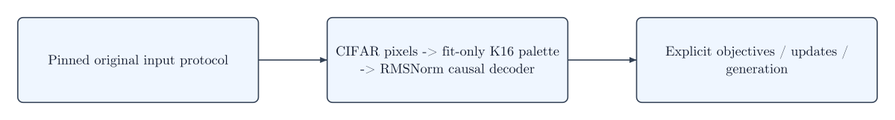
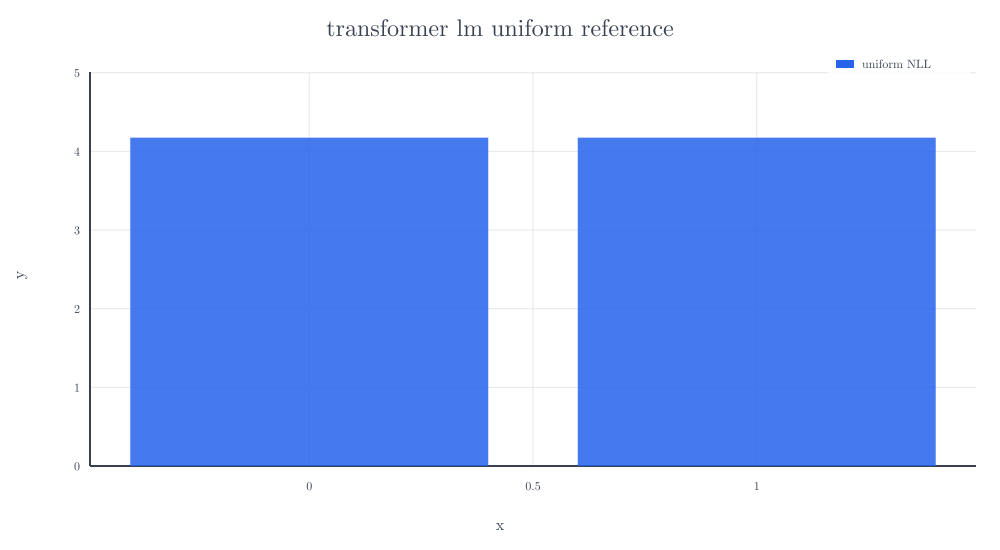
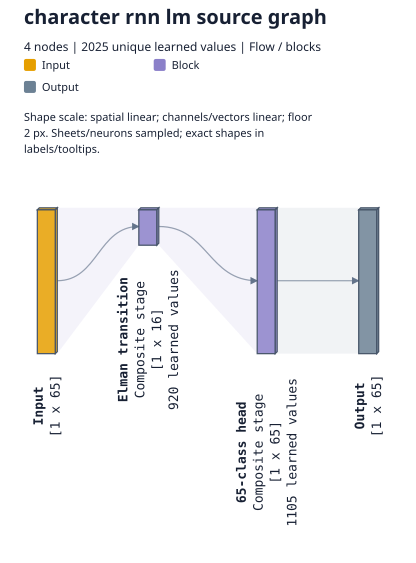
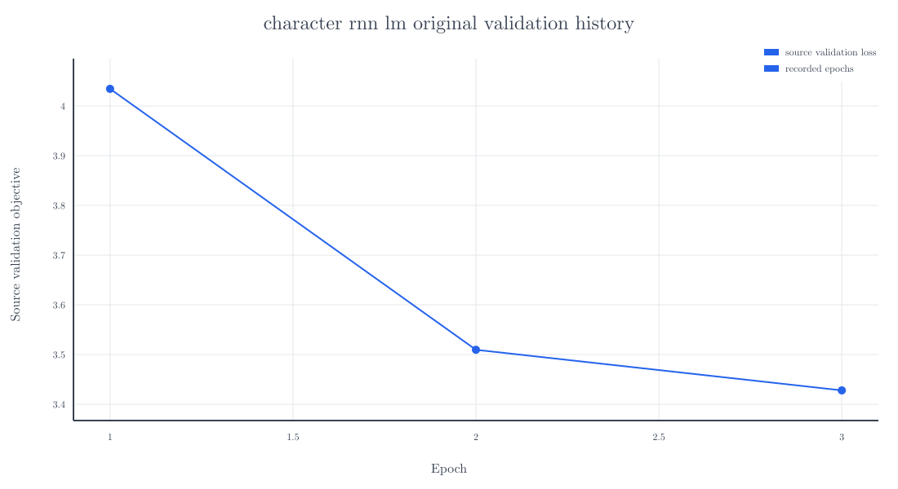

Character Language Modelling: Explicit Elman Recurrence and Streaming State
Abstract
The exact upstream preparation protocol and the complete editable native C++ experiment preserve original source rows, seeds, fitting budgets and validation. Canonical components expose mathematical graphs; every objective, optimizer step, fitting/generation loop and deployment comparison remains visible.
Follow the actual data and model
Fit-only65-character alphabet -> embedding8 -> tanh16 -> logits65.
#include <dm/dm.hpp>
int main(){std::filesystem::create_directories("build");dm::graphics::Diagram d(29,1200);dm::graphics::DiagramNodeStyle s;s.width=14;s.height=5;s.font_size=23;d.node("source",{-18,0},"Pinned original input protocol",s).node("graph",{0,0},"Fit-only65-character alphabet -> embedding8 -> tanh16 -> logits65",s).node("report",{18,0},"Explicit objectives / updates / generation",s).edge("source","graph").edge("graph","report").save_svg("build/character_rnn_lm_method.svg");}
Prepare the original inputs through datamunge
The native adapter follows the recovered upstream preparation script, including source checksums, source row identities, fitting-only vocabulary/palette selection and held-out boundaries. Runtime preparation calls no Python or another checkout. Native byte-valued image arrays are stored as Int32 with identical numeric values. Optional external TensorFlow recordings are separate; their absence does not establish external parity.
A hand-checkable likelihood reference
A uniform categorical distribution over65 classes gives negative log-likelihood log(65). For language/image models this is nats per predicted token; for a sequence tagger it is a single independent-token reference, not its CRF sequence likelihood.
#include <dm/dm.hpp>
int main(){auto logp=dm::nn::log_softmax(dm::nn::zeros({1,65}),1);double computed=-logp.to_vector<double>()[0];std::print("| classes | native uniform NLL | analytic NLL |\n|---:|---:|---:|\n| 65 | {:.9f} | {:.9f} |\n",computed,std::log(65.));dm::graphics::RPlot::create().bars(std::vector<double>{0,1},std::vector<double>{computed,std::log(65.)},"uniform NLL",{37,99,235}).ylim(0,std::log(65.)*1.2).title("character rnn lm uniform reference").size(1000,550).save_svg("build/character_rnn_lm_worked.svg");}| classes | native uniform NLL | analytic NLL |
|---|---|---|
| 65 | 4.174387455 | 4.174387270 |

Inspect the native graph
The preview groups actual native graph endpoints into named stages, using independent source-sized parameters. It shows one recurrent transition; the complete training program retains the original full sequence unroll. Cache/filter/generation loops and CRF decoding remain explicit in the program below.
#include <dm/dm.hpp>
int main(){namespace n=dm::nn;namespace m=n::models;std::filesystem::create_directories("build");n::ParameterStore p(0);m::CharacterRnnParameters(p);n::Module network([&](const n::Tensor&x){auto y=m::CharacterRnnStep(p,x,n::zeros({1,16}));n::model_stage("Elman transition",x,y.first);return n::model_stage("65-class head",y.first,y.second);},"character rnn lm source graph");n::ModelPlotOptions options;options.detail=n::ModelPlotDetail::Blocks;options.sizing.minimum_extent=2;options.sizing.max_planes=2;network.plot(n::zeros({1,65}),options).save_svg("build/character_rnn_lm_network.svg");}
Complete preserved source experiment
Original epoch/batch budgets, random streams, source guard tests and weak outcomes are preserved. All fitting and generation code is editable. This program uses native C++ data preparation and mathematical components; it does not execute the upstream Python preparers. Saved arrays and source stdout will be compared against a frozen copy of the pre-conversion program on the exact same prepared inputs. No external-framework equivalence is inferred when recordings are absent.
#include <dm/dm.hpp>
// CMD: just run-nn character_rnn_lm
// Actual Elman character language model: tinyShakespeare, three epochs,
// streaming hidden-state generation.
//
// Port of tflow's character_rnn_lm (common/ml/character_rnn_lm.h,
// common/nn/character_rnn_lm.h -> examples/nn/common/character_rnn_lm.hpp).
// Data: the pinned tinyShakespeare character_rnn split
// (paths::Dataset("character_rnn"): 128 fit / 32 validation / 32 test windows
// of 64 characters, 65-character fit-only vocabulary). Learned 65x8 embedding,
// tanh hidden 16, 16x16 recurrence, 65-class head: 2025 parameters in 6
// tensors; full 64-step BPTT from a zero state, Adam .003, batch 8 in tflow's
// BatchOrder(128, 8, 8911), three epochs = 48 updates.
//
// Checks (as tflow): data windows/shift; census; restore bit-exact; the
// one-step stateful graph reproduces all 64 states/logits of the full unroll
// (< 2e-6); encoded-input Jacobian of position 32 exactly zero for every
// later position; future intervention leaves earlier logits bit-identical;
// invalid character id rejected; four seeded 256-character streaming draws
// (sampled feedback) repeat bit-exactly; temperature controls share uniforms
// and first raw logits; inference immutable. Fit-only unigram/bigram baselines.
// Added: init=auto replays TF's initial arrays and compares every record; TF's
// final weights must reproduce TF's test outputs and seeded samples.
// Deviations: final.npz checkpoint, no independent_audit.json. Options:
// epochs=3 data=DIR out=DIR tf=DIR init=auto|tf|nn threads=4 verbose=0.
// Output: output/nn/models/character_rnn_lm.
// Editable workflow support: binary_pixels.hpp
// Shared harness of the binary 8x8 MNIST autoregressive density ports
// (pixel_cnn, gated_pixel_cnn, made_density, pixel_rnn): the program body that
// tflow repeats in each of those .cc files, plus the model-independent part of
// tflow's common/ml/{pixel_cnn,gated_pixel_cnn,made_density,pixel_rnn}.h
// (teacher-forced Bernoulli likelihood, causal logit/input Jacobian, prefix-only
// ancestral sampling with MT19937 uniforms).
//
// Data: the 1000/200/200 MNIST pools of tflow's saliency assets (ae::LoadSaliency),
// half-pixel bilinear 28 -> 8 in double then float32 threshold >= .5, as tflow.
//
// tflow -> datamunge: session graphs -> eager calls, AddSymbolicGradients ->
// nn::grad, Adam train_op -> nn::Optimizer (Adam .003), SaveV2 -> final.npz.
// TF parity: init=auto (default) replays TF's recorded initial_arrays.npz from
// tflow's output/models/<name>[/<variant>] so the whole run follows TF's; every
// record is then compared with TF's and the replayed first-step records must
// match. Independently of the trajectory, TF's FINAL weights (model_arrays.npz)
// are loaded into a fresh model which must reproduce TF's test outputs.
// Editable workflow support: autoencoder.hpp
// Shared support for the autoencoder ports: a port of the parts of tflow's
// common/ml/{autoencoder,convolutional_autoencoder,variational_autoencoder,
// saliency}.h and common/nn/{convolutional_autoencoder,variational_autoencoder,
// smoothgrad}.h that convolutional_autoencoder and variational_autoencoder use.
//
// Data: the balanced 1000 fit / 200 validation / 200 test MNIST pools of
// $DATAMUNGE_DATA_DIR/saliency/saliency_data.npz (tflow's `just
// autoencoder-assets`). Checkpoints are .npz files of the parameter store
// instead of TF SaveV2 bundles. Parameter initialisation uses datamunge's
// generator, so trajectories match tflow only statistically; batch orders and
// Gaussian noise banks are bit-identical to tflow's.
// Editable workflow support: checks.hpp
// Small runtime checks used by the executable nn examples. They stay on in
// Release builds and make the example exit nonzero on failure, so `just
// run-all-nn` doubles as a regression test against the recorded TF numbers.
// Editable workflow support: runtime.hpp
// Bounded demonstrations by default; opt into convergence experiments explicitly.
namespace example_runtime {
inline bool Full() {
const char* value = std::getenv("DATAMUNGE_EXAMPLES_FULL");
return value && std::string(value) == "1";
}
template <typename T> T Limit(T requested, T quick_limit) {
return Full() ? requested : std::min(requested, quick_limit);
}
inline void Describe() {
if (!Full())
std::cout << "Quick demonstration: bounded training; convergence metrics require "
"DATAMUNGE_EXAMPLES_FULL=1.\n";
}
} // namespace example_runtime
namespace check {
inline void Require(bool condition, const std::string& message) {
if (!condition) throw std::runtime_error(message);
}
// A short demonstration checks execution, derivatives and persistence; reaching
// a published accuracy/return requires the separately requested full schedule.
inline void TrainingQuality(bool condition, const std::string& message) {
if (example_runtime::Full()) Require(condition, message);
else std::cout << " full-training quality check deferred: " << message << '\n';
}
inline void Near(double actual, double expected, double tolerance, const std::string& message) {
if (!std::isfinite(actual) || !std::isfinite(expected) || std::abs(actual - expected) > tolerance)
throw std::runtime_error(message + ": got " + std::to_string(actual) + ", expected " + std::to_string(expected));
}
/// Expects `f` to throw; returns the message.
template <typename F>
std::string Throws(F&& f, const std::string& message) {
try {
f();
} catch (const std::exception& e) {
return e.what();
}
throw std::runtime_error(message + ": expected an exception");
}
} // namespace check
inline void Header(const std::string& title) {
const std::size_t pad = title.size() < 60 ? 60 - title.size() : 0;
std::cout << "\n== " << title << " " << std::string(pad, '=') << "\n";
}
// Editable workflow support: paths.hpp
// Where the nn example ports read datasets and write their outputs.
//
// Datasets: $DATAMUNGE_DATA_DIR, or the user's cache. Public datasets are
// prepared by the example data loaders when first needed.
// Outputs (checkpoints, histories, fixtures): $DATAMUNGE_OUTPUT_DIR, or
// output/nn relative to the working directory (`just run-nn` runs from the
// repository root). Both are created on demand by the caller.
// Editable workflow support: dataset_assets.hpp
namespace dataset_assets{inline std::string DataRoot(){return dm::datasets::data_home();}}
namespace dataset_assets {inline void EnsureSaliency(const std::string& directory){dm::datasets::prepare_example_data("mnist-assets",std::filesystem::path(directory).parent_path().string());}}
namespace paths {
inline std::filesystem::path DataRoot() {
return dataset_assets::DataRoot();
}
/// DataRoot() / name, e.g. Dataset("mnist").
inline std::filesystem::path Dataset(const std::string& name) { return DataRoot() / name; }
inline std::filesystem::path OutputRoot(){return std::filesystem::absolute("build/recovered-language");}
/// OutputRoot() / relative, created as a directory.
inline std::filesystem::path OutputDir(const std::string& relative) {
auto dir = OutputRoot() / relative;
std::filesystem::create_directories(dir);
return dir;
}
} // namespace paths
namespace ae {
namespace nn = datamunge::nn;
// ---- data ----------------------------------------------------------------------------
using SaliencyData=datamunge::nn::models::SaliencyData;
inline SaliencyData Rows(const SaliencyData& d, const std::vector<std::int64_t>& rows) {
return {nn::take_rows(d.images, rows), nn::take_rows(d.labels, rows), nn::take_rows(d.source, rows)};
}
inline nn::Tensor Find(const nn::NamedTensors& arrays, const std::string& name) {
for (const auto& [key, value] : arrays)
if (key == name) return value;
throw std::runtime_error("missing array " + name);
}
/// The fit, validation and test pools with tflow's integrity checks.
inline std::vector<SaliencyData> LoadSaliency(const std::filesystem::path&root){dataset_assets::EnsureSaliency(root.string());return nn::models::LoadSaliency(root);}
/// Copies tflow's provenance files next to the outputs when they exist.
inline void CopyManifests(const std::filesystem::path& data, const std::filesystem::path& root) {
const auto opts = std::filesystem::copy_options::overwrite_existing;
if (std::filesystem::exists(data / "manifest.json"))
std::filesystem::copy_file(data / "manifest.json", root / "data_manifest.json", opts);
const auto source = paths::Dataset("autoencoder") / "source_manifest.json";
if (std::filesystem::exists(source)) std::filesystem::copy_file(source, root / "source_manifest.json", opts);
}
// ---- tensor helpers --------------------------------------------------------------------
/// Raw bytes, for exact-equality checks (tflow's tensor_data() comparisons).
inline std::string Bytes(const nn::Tensor& t) {
const auto values = t.contiguous().to_vector<float>();
return std::string(reinterpret_cast<const char*>(values.data()), values.size() * sizeof(float));
}
inline double MaxAbsDiff(const nn::Tensor& a, const nn::Tensor& b, std::int64_t count) {
const auto x = a.contiguous().to_vector<float>(), y = b.contiguous().to_vector<float>();
double out = 0;
for (std::int64_t i = 0; i < count; ++i) out = std::max(out, std::abs(double(x[i]) - y[i]));
return out;
}
/// Mean squared error in double precision; the prediction must be finite in [0, 1].
inline double Mse(const nn::Tensor& prediction, const nn::Tensor& original) {
check::Require(prediction.numel() == original.numel(), "aligned reconstruction pixels");
const auto p = prediction.contiguous().to_vector<float>(), o = original.contiguous().to_vector<float>();
double sum = 0;
for (std::size_t i = 0; i < p.size(); ++i) {
const double x = p[i], y = o[i];
check::Require(std::isfinite(x) && x >= 0 && x <= 1, "finite bounded sigmoid reconstruction");
sum += (x - y) * (x - y);
}
return sum / double(p.size());
}
/// Per-pixel mean [784] of the fit images.
inline nn::Tensor PixelMean(const nn::Tensor& fit) {
const auto x = fit.contiguous().to_vector<float>();
const auto n = fit.size(0);
std::vector<float> out(784);
for (int i = 0; i < 784; ++i) {
double sum = 0;
for (std::int64_t b = 0; b < n; ++b) sum += x[b * 784 + i];
out[i] = float(sum / double(n));
}
return nn::from_vector(out, {784});
}
/// `mean` [784] repeated n times as [n, 784].
inline nn::Tensor Constant(const nn::Tensor& mean, std::int64_t n) {
return nn::tile(nn::reshape(mean, {1, 784}), {n, 1}).contiguous();
}
/// Values of every parameter (deep copies), in creation order.
inline nn::NamedTensors Arrays(const nn::ParameterStore& store) {
nn::NamedTensors out;
for (const auto& name : store.names()) out.emplace_back(name, store.at(name).detach().clone());
return out;
}
inline std::vector<std::string> Snapshot(const nn::ParameterStore& store) {
std::vector<std::string> out;
for (const auto& name : store.names()) out.push_back(Bytes(store.at(name)));
return out;
}
/// Checks every gradient is finite and every tensor gets a nonzero one; returns them named.
inline nn::NamedTensors CheckGradients(const nn::ParameterStore& store, const std::vector<nn::Tensor>& gradients,
const std::string& finite, const std::string& nonzero) {
nn::NamedTensors out;
check::Require(gradients.size() == store.size(), "one gradient per parameter");
for (std::size_t i = 0; i < gradients.size(); ++i) {
check::Require(gradients[i].defined(), nonzero);
double norm = 0;
for (float v : gradients[i].contiguous().to_vector<float>()) {
check::Require(std::isfinite(v), finite);
norm += double(v) * v;
}
check::Require(norm > 0, nonzero);
out.emplace_back(store.names()[i], gradients[i]);
}
return out;
}
// ---- figures ---------------------------------------------------------------------------
/// One row of 28x28 panels (each [784] or [28, 28, 1] values in [0, 1]) scaled 4x,
/// 4 px apart on gray 220 background, as tflow's digit<k>.png.
inline void PanelRow(const std::filesystem::path& path, const std::vector<nn::Tensor>& panels) {
std::vector<nn::Tensor> tiles;
for (const auto& p : panels) tiles.push_back(nn::reshape(p, {28, 28, 1}));
nn::save_image_grid(nn::stack(tiles, 0), path.string(), std::int64_t(tiles.size()), 0.0, 1.0, 4, 220.0 / 255.0,
4);
}
/// The b-th 784-pixel row of [n, 784] / [n, 28, 28, 1] probabilities.
inline nn::Tensor Row(const nn::Tensor& x, std::int64_t b) {
return nn::reshape(nn::slice_axis(x, 0, b, b + 1), {784});
}
// ---- convolutional autoencoder -------------------------------------------------------
struct ConvAeOutput {
nn::Tensor conv1, pool1, conv2, code, decoder1, reconstruction;
};
// Compatibility handles for independently maintained Python/R workflows.
// Model arithmetic is canonical in nn/autoencoder_models.hpp.
inline nn::Tensor ConvAeDecode(nn::ParameterStore& p, const nn::Tensor& code, nn::Tensor* decoder1 = nullptr) {
const auto result = nn::models::ConvolutionalDecoder(p, code);
if (decoder1) *decoder1 = result.hidden;
return result.reconstruction;
}
inline ConvAeOutput ConvolutionalAutoencoder(nn::ParameterStore& p, const nn::Tensor& image) {
const auto result = nn::models::ConvolutionalAutoencoder(p, image);
return {result.conv1, result.pool1, result.conv2, result.code, result.decoder1, result.reconstruction};
}
class ConvolutionalAutoencoderModel {
public:
nn::ParameterStore parameters{1801};
std::unique_ptr<nn::Optimizer> optimizer;
explicit ConvolutionalAutoencoderModel(bool training = true) {
{
nn::NoGradGuard guard;
ConvolutionalAutoencoder(parameters, nn::zeros({1, 28, 28, 1}));
}
if (training) {
nn::OptimizerConfig config;
config.kind = nn::OptimizerKind::Adam;
optimizer = std::make_unique<nn::Optimizer>(parameters, .003, config);
}
}
static nn::Tensor Loss(const nn::Tensor& reconstruction, const nn::Tensor& image) {
return nn::mean(nn::square(reconstruction - image));
}
/// {code, reconstruction, loss}
std::vector<nn::Tensor> Evaluate(const nn::Tensor& images) {
nn::NoGradGuard guard;
auto net = ConvolutionalAutoencoder(parameters, images);
return {net.code, net.reconstruction, Loss(net.reconstruction, images)};
}
std::vector<nn::Tensor> Activations(const nn::Tensor& images) {
nn::NoGradGuard guard;
auto n = ConvolutionalAutoencoder(parameters, images);
return {n.conv1, n.pool1, n.conv2, n.code, n.decoder1, n.reconstruction};
}
nn::Tensor Decode(const nn::Tensor& codes) {
nn::NoGradGuard guard;
return ConvAeDecode(parameters, codes);
}
};
// ---- variational autoencoder ---------------------------------------------------------
/// @brief Forward explicit diagonal-Gaussian sampling to the canonical core.
/// @param mu Finite nonempty Float32/64 means [B,L].
/// @param log_variance Finite matching log variances [B,L].
/// @param epsilon Finite matching explicit standard-normal noise [B,L].
/// @return Owning differentiable mu+exp(log_variance/2)*epsilon.
/// @throws std::invalid_argument For invalid shape, dtype or values.
/// @par Example
/// @code
/// #include <dm/dm.hpp>
/// namespace n=dm::nn;
/// const auto z=n::models::GaussianReparameterize(n::ones({1,2}),n::zeros({1,2}),n::zeros({1,2}));
/// // Canonical equivalent: z is [1,1], with no posterior RNG draw.
/// @endcode
/// @see datamunge::nn::models::GaussianReparameterize()
inline nn::Tensor VaeReparameterize(const nn::Tensor& mu, const nn::Tensor& log_variance, const nn::Tensor& epsilon) {
return nn::models::GaussianReparameterize(mu, log_variance, epsilon);
}
/// @brief Forward coordinate-summed standard-normal KL to the canonical core.
/// @param mu Finite nonempty Float32/64 means [B,L].
/// @param log_variance Finite matching log variances [B,L].
/// @return Owning differentiable per-row KL [B], without clipping roundoff.
/// @throws std::invalid_argument For invalid shape, dtype or values.
/// @par Example
/// @code
/// #include <dm/dm.hpp>
/// namespace n=dm::nn;
/// const auto kl=n::models::DiagonalGaussianKl(n::ones({2,3}),n::zeros({2,3}));
/// // Canonical equivalent: each coordinate-summed KL is1.5.
/// @endcode
/// @see datamunge::nn::models::DiagonalGaussianKl()
inline nn::Tensor VaeKl(const nn::Tensor& mu, const nn::Tensor& log_variance) {
return nn::models::DiagonalGaussianKl(mu, log_variance);
}
/// @brief Forward stable pixel-summed Bernoulli cross-entropy to the canonical core.
/// @param logits Finite nonempty Float32/64 log-odds [B,F].
/// @param target Finite matching unit-range targets [B,F].
/// @return Owning differentiable per-row summed NLL [B], without sigmoid clipping.
/// @throws std::invalid_argument For invalid shape, dtype or values.
/// @par Example
/// @code
/// #include <dm/dm.hpp>
/// namespace n=dm::nn;
/// const auto nll=n::models::BernoulliPixelNll(n::zeros({2,3}),n::zeros({2,3}));
/// // Canonical equivalent: each row is3*log(2), not a pixel mean.
/// @endcode
/// @see datamunge::nn::models::BernoulliPixelNll()
inline nn::Tensor VaePixelNll(const nn::Tensor& logits, const nn::Tensor& target) {
return nn::models::BernoulliPixelNll(logits, target);
}
struct VaeOutput {
nn::Tensor mu, log_variance, z, logits, probability, reconstruction_nll, kl, loss;
};
/// @brief Forward the original two-code/ReLU64 decoder to the canonical core.
/// @param p Mutable matching floating parameter store; decoder/output names are retained.
/// @param z Finite nonempty Float32/64 codes [B,2].
/// @return Owning differentiable Bernoulli logits [B,784], without an image input.
/// @throws std::invalid_argument For invalid code/dtype or incompatible leaves.
/// @par Example
/// @code
/// #include <dm/dm.hpp>
/// namespace n=dm::nn;
/// n::ParameterStore p(1951);
/// const auto logits=n::models::GaussianVaeDecode(p,n::zeros({2,2}),784,2,64);
/// // Canonical equivalent: [2,784] logits from four decoder leaves.
/// @endcode
/// @see datamunge::nn::models::GaussianVaeDecode()
inline nn::Tensor VaeDecodeLogits(nn::ParameterStore& p, const nn::Tensor& z) {
return nn::models::GaussianVaeDecode(p, z, 784, 2, 64);
}
/// @brief Forward the original ReLU64/two-coordinate VAE to native beta=1 inference.
///
/// This compatibility record retains the original eight fields and ten-leaf
/// creation order; canonical GaussianVaeOutput also exposes unweighted_loss.
/// No fitting, posterior noise draws or mode changes are hidden by this adapter.
/// @param p Mutable matching floating parameter store; original names are retained.
/// @param image Finite nonempty unit-range Float32/64 [B,784] pixels.
/// @param epsilon Finite matching explicit Gaussian noise [B,2].
/// @return Owning original eight-field result; loss averages pixel-summed NLL plus latent-summed KL over images.
/// @throws std::invalid_argument For invalid inputs/dtypes or incompatible leaves.
/// @par Example
/// @code
/// #include <dm/dm.hpp>
/// namespace n=dm::nn;
/// n::ParameterStore p(1951);
/// const auto out=n::models::BetaVariationalAutoencoder(p,n::zeros({2,784}),n::zeros({2,2}),1,784,2,64);
/// // Canonical equivalent: beta1, latent2, hidden64, ten leaves/101652 scalars.
/// @endcode
/// @see datamunge::nn::models::BetaVariationalAutoencoder()
inline VaeOutput VariationalAutoencoder(nn::ParameterStore& p, const nn::Tensor& image, const nn::Tensor& epsilon) {
const auto out = nn::models::BetaVariationalAutoencoder(p, image, epsilon, 1, 784, 2, 64);
return {out.mu, out.log_variance, out.z, out.logits, out.probability,
out.reconstruction_nll, out.kl, out.loss};
}
class VariationalAutoencoderModel {
public:
nn::ParameterStore parameters{1951};
std::unique_ptr<nn::Optimizer> optimizer;
explicit VariationalAutoencoderModel(bool training = true) {
{
nn::NoGradGuard guard;
VariationalAutoencoder(parameters, nn::zeros({1, 784}), nn::zeros({1, 2}));
}
if (training) {
nn::OptimizerConfig config;
config.kind = nn::OptimizerKind::Adam;
optimizer = std::make_unique<nn::Optimizer>(parameters, .003, config);
}
}
static nn::Tensor Flatten(const nn::Tensor& images) { return nn::reshape(images, {images.size(0), 784}); }
/// {mu, log_variance, z, probability, reconstruction_nll, kl, loss}, all checked finite.
std::vector<nn::Tensor> Evaluate(const nn::Tensor& images, const nn::Tensor& noise) {
nn::NoGradGuard guard;
auto n = VariationalAutoencoder(parameters, Flatten(images), noise);
std::vector<nn::Tensor> out{n.mu, n.log_variance, n.z, n.probability, n.reconstruction_nll, n.kl, n.loss};
for (auto& t : out) {
t = t.contiguous();
for (float v : t.to_vector<float>()) check::Require(std::isfinite(v), "ALL posterior/output/objective values finite");
}
return out;
}
nn::Tensor Decode(const nn::Tensor& codes) {
nn::NoGradGuard guard;
return nn::sigmoid(VaeDecodeLogits(parameters, codes));
}
std::vector<nn::Tensor> Gradient(const nn::Tensor& images, const nn::Tensor& noise) {
return nn::grad(VariationalAutoencoder(parameters, Flatten(images), noise).loss, parameters.parameters());
}
/// One Adam step; returns the pre-update negative ELBO.
double Update(const nn::Tensor& images, const nn::Tensor& noise) {
auto loss = VariationalAutoencoder(parameters, Flatten(images), noise).loss;
const double value = loss.item<float>();
check::Require(std::isfinite(value) && value >= 0, "finite negativeELBO");
optimizer->minimize(loss);
return value;
}
};
/// tflow's nn::GaussianNoise: Box-Muller pairs from std::mt19937(seed), as
/// float64 [samples, shape...].
inline nn::Tensor GaussianNoise(const nn::Shape& shape, std::int64_t samples, std::uint32_t seed) {
return nn::models::GaussianNoise(shape, samples, seed);
}
struct VaeNoiseBank {
nn::Tensor standard, epsilon; // float64 / float32 [samples, n, 2]
};
inline VaeNoiseBank VaeNoise(std::int64_t n, std::int64_t samples, std::uint32_t seed) {
auto standard = GaussianNoise({n, 2}, samples, seed);
return {standard, nn::cast(standard, nn::DType::Float32).contiguous()};
}
inline nn::Tensor VaeNoiseAt(const VaeNoiseBank& bank, std::int64_t k) {
return nn::select(bank.epsilon, 0, k).contiguous();
}
/// Monte Carlo {reconstruction NLL, KL, negative ELBO} per image over every sample of `bank`.
inline std::vector<double> VaeScore(VariationalAutoencoderModel& model, const nn::Tensor& images,
const VaeNoiseBank& bank) {
double reconstruction = 0, kl = 0;
const std::int64_t n = images.size(0), samples = bank.epsilon.size(0);
for (std::int64_t k = 0; k < samples; ++k) {
auto out = model.Evaluate(images, VaeNoiseAt(bank, k));
const auto nll = out[4].to_vector<float>(), kls = out[5].to_vector<float>();
for (std::int64_t b = 0; b < n; ++b) {
reconstruction += nll[b];
if (k == 0) kl += kls[b];
}
}
reconstruction /= double(n * samples);
kl /= double(n);
return {reconstruction, kl, reconstruction + kl};
}
// ---- dense undercomplete autoencoder (tflow's common/nn/autoencoder.h + ml/autoencoder.h) ----
/// [n, 28, 28, 1] (or any n x 784 values) as [n, 784] original pixels.
inline nn::Tensor Flatten(const nn::Tensor& images) { return nn::reshape(images, {images.size(0), 784}); }
// Preserve the SWIG-visible value type and function while the canonical model
// lives in the library. Existing Python/R examples keep the same interface.
struct DenseAeOutput {
nn::Tensor code, reconstruction;
};
inline DenseAeOutput UndercompleteAutoencoder(nn::ParameterStore& p, const nn::Tensor& input,
std::int64_t features = 784, std::int64_t latent = 32) {
const auto result = nn::models::UndercompleteAutoencoder(p, input, features, latent);
return {result.code, result.reconstruction};
}
/// tflow's ReconstructionMse: mean over every element.
inline nn::Tensor ReconstructionMse(const nn::Tensor& prediction, const nn::Tensor& original) {
return nn::mean(nn::square(prediction - original));
}
/// Adam(.003), the optimiser of every short autoencoder example.
inline std::unique_ptr<nn::Optimizer> MakeAdam(nn::ParameterStore& store, double learning_rate = .003) {
nn::OptimizerConfig config;
config.kind = nn::OptimizerKind::Adam;
return std::make_unique<nn::Optimizer>(store, learning_rate, config);
}
/// tflow's CorruptForDenoising: clamp(float(x + sigma z), 0, 1) with z one float64 bank [1, shape...].
inline nn::Tensor CorruptForDenoising(const nn::Tensor& clean, const nn::Tensor& standard_noise, float sigma) {
return nn::models::CorruptForDenoising(clean, standard_noise, sigma);
}
/// tflow's data.npz record: the three pools (+ any extra arrays).
inline void SaveData(const std::filesystem::path& file, const std::vector<SaliencyData>& pools,
const nn::NamedTensors& extra = {}) {
nn::NamedTensors arrays{{"fit_images", pools[0].images}, {"validation_images", pools[1].images},
{"test_images", pools[2].images}, {"fit_source_ids", pools[0].source},
{"validation_source_ids", pools[1].source}, {"test_source_ids", pools[2].source},
{"test_labels", pools[2].labels}};
arrays.insert(arrays.end(), extra.begin(), extra.end());
nn::save_npz(file.string(), arrays);
}
/// Index of the first record of `digit` in a label vector (gallery rows).
inline int FirstOfDigit(const nn::Tensor& labels, int digit) {
const auto l = labels.contiguous().to_vector<int>();
for (std::size_t b = 0; b < l.size(); ++b)
if (l[b] == digit) return int(b);
throw std::runtime_error("no record of digit " + std::to_string(digit));
}
/// Writes digit<k>.png (one panel row per digit: the b-th row of every tensor) and its html sections.
inline void DigitGallery(const std::filesystem::path& root, const SaliencyData& test,
const std::vector<nn::Tensor>& panels, std::ostream& html) {
const auto source = test.source.contiguous().to_vector<int>();
for (int digit = 0; digit < 10; ++digit) {
const int b = FirstOfDigit(test.labels, digit);
std::vector<nn::Tensor> row;
for (const auto& t : panels) row.push_back(Row(t, b));
const std::string file = "digit" + std::to_string(digit) + ".png";
PanelRow(root / file, row);
html << "<section><h2>Digit" << digit << ",source" << source[b] << "</h2><img src='" << file << "'></section>";
}
}
/// Byte-identical parameter stores (matched-initialisation checks).
inline bool SameArrays(const nn::ParameterStore& a, const nn::ParameterStore& b) {
if (a.names() != b.names()) return false;
for (const auto& name : a.names())
if (Bytes(a.at(name)) != Bytes(b.at(name))) return false;
return true;
}
// ---- 2.3 applications: frozen checkpoints and case figures ------------------------------
/// tflow's ml::UndercompleteModel (784->32 ReLU->784 sigmoid, seed 1471) for the frozen
/// applications; the training port keeps its own copy in undercomplete_autoencoder.cpp.
class UndercompleteModel {
public:
nn::ParameterStore parameters{1471};
std::unique_ptr<nn::Optimizer> optimizer;
explicit UndercompleteModel(bool training = true) {
{
nn::NoGradGuard guard;
UndercompleteAutoencoder(parameters, nn::zeros({1, 784}));
}
if (training) optimizer = MakeAdam(parameters);
}
/// {code, reconstruction, loss}
std::vector<nn::Tensor> Evaluate(const nn::Tensor& images) {
nn::NoGradGuard guard;
auto x = Flatten(images);
auto n = UndercompleteAutoencoder(parameters, x);
return {n.code, n.reconstruction, ReconstructionMse(n.reconstruction, x)};
}
nn::Tensor Decode(const nn::Tensor& codes) {
nn::NoGradGuard guard;
return nn::dense(parameters, "decoder", codes, 784, nn::Activation::Sigmoid);
}
};
/// Restores a frozen checkpoint directory written by a training port (best.npz) or by
/// tflow (model_arrays.npz = its restored best checkpoint); returns the file used.
inline std::filesystem::path LoadFrozen(nn::ParameterStore& store, const std::filesystem::path& directory,
const std::string& what) {
for (const char* name : {"best.npz", "model_arrays.npz"}) {
const auto file = directory / name;
if (std::filesystem::exists(file)) {
store.load(file.string());
return file;
}
}
check::Require(false, what + ": no best.npz/model_arrays.npz in " + directory.string() + " (run the training port first)");
return {};
}
/// One case strip as tflow's case_<k>.png: the b-th 784-pixel row of every tensor, 3x nearest,
/// 4 px apart on gray 220 (84 x (88 n - 4) RGB).
inline void CaseStrip3(const std::filesystem::path& path, const std::vector<nn::Tensor>& panels, std::int64_t b) {
std::vector<nn::Tensor> tiles;
for (const auto& p : panels) tiles.push_back(nn::reshape(Row(p, b), {28, 28, 1}));
nn::save_image_grid(nn::tile(nn::stack(tiles, 0), {1, 1, 1, 3}), path.string(), std::int64_t(tiles.size()), 0.0, 1.0,
4, 220.0 / 255.0, 3);
}
/// tflow's latent-application Mosaic: [n, 784] rows, `columns` per row, 3x nearest, 4 px gray 220 gaps.
inline void Mosaic3(const std::filesystem::path& path, const nn::Tensor& values, std::int64_t columns) {
const auto n = values.size(0);
nn::save_image_grid(nn::tile(nn::reshape(values, {n, 28, 28, 1}), {1, 1, 1, 3}), path.string(), columns, 0.0, 1.0, 4,
220.0 / 255.0, 3);
}
} // namespace ae
// Editable workflow support: tf_replay.hpp
// Small helpers the 4.2 sequence-task ports share for working with tflow's
// recorded runs: named-array maps (tflow's `std::map<std::string, tf::Tensor>`
// batches), row selection, exact/approximate comparisons, loading TF's
// initial_arrays.npz into a ParameterStore and reading history.tsv columns.
//
// A tflow run directory (tflow's output/models/<name>) holds initial_arrays.npz,
// first_batch.npz, initial_gradients.npz, history.tsv and model_arrays.npz.
// Replaying the run from TF's own initial weights with the same batch order
// (nn::BatchOrder reproduces tflow's) and the same optimizer checks the port
// numerically, independently of the random initialisation.
namespace replay {
namespace nn = datamunge::nn;
using nn::Tensor;
using Map = std::map<std::string, Tensor>;
/// tflow's recorded output directory for an example (its output/models/<name>).
inline std::filesystem::path TfModels(const std::string& name) {
return paths::DataRoot().parent_path() / "models" / name;
}
inline Tensor Get(const nn::NamedTensors& arrays, const std::string& key) {
for (const auto& [name, t] : arrays)
if (name == key) return t;
throw std::runtime_error("missing array " + key);
}
inline Map ToMap(const nn::NamedTensors& arrays) { return {arrays.begin(), arrays.end()}; }
inline nn::NamedTensors ToNamed(const Map& m) { return {m.begin(), m.end()}; }
/// Rows `rows` (axis 0) of every array.
inline Map Rows(const Map& m, const std::vector<std::int64_t>& rows) {
Map out;
for (const auto& [k, v] : m) out[k] = nn::take_rows(v, rows);
return out;
}
/// {key: arrays["<split>_<key>"]} for each key.
inline Map Split(const nn::NamedTensors& arrays, const std::string& split, const std::vector<std::string>& keys) {
Map out;
for (const auto& k : keys) out[k] = Get(arrays, split + "_" + k);
return out;
}
inline double MaxAbsDiff(const Tensor& a, const Tensor& b) {
const auto x = a.to_vector<double>(), y = b.to_vector<double>();
check::Require(x.size() == y.size(), "compared tensors have the same size");
double m = 0;
for (std::size_t i = 0; i < x.size(); ++i) m = std::max(m, std::abs(x[i] - y[i]));
return m;
}
/// Bit-identical values (dtype and shape included).
inline bool SameBits(const Tensor& a, const Tensor& b) {
if (a.dtype() != b.dtype() || a.shape() != b.shape()) return false;
auto same = [](const auto& x, const auto& y) {
return x.size() == y.size() && (x.empty() || std::memcmp(x.data(), y.data(), x.size() * sizeof(x[0])) == 0);
};
switch (a.dtype()) {
case nn::DType::Float32: return same(a.to_vector<float>(), b.to_vector<float>());
case nn::DType::Float64: return same(a.to_vector<double>(), b.to_vector<double>());
case nn::DType::Int32: return same(a.to_vector<std::int32_t>(), b.to_vector<std::int32_t>());
default: return same(a.to_vector<std::int64_t>(), b.to_vector<std::int64_t>());
}
}
inline bool SameBits(const Map& a, const Map& b) {
if (a.size() != b.size()) return false;
for (const auto& [k, v] : a)
if (!b.count(k) || !SameBits(v, b.at(k))) return false;
return true;
}
/// Copies of every parameter, by name.
inline Map Arrays(const nn::ParameterStore& p) {
Map out;
for (const auto& name : p.names()) out[name] = p.at(name).detach().clone();
return out;
}
/// Gradients aligned with p.names(), by name.
inline Map Named(const nn::ParameterStore& p, const std::vector<Tensor>& g) {
Map out;
for (std::size_t i = 0; i < g.size(); ++i) out[p.names()[i]] = g[i].defined() ? g[i].detach() : nn::zeros_like(p.parameters()[i]).detach();
return out;
}
/// Overwrites every parameter of `p` from an .npz (e.g. TF's initial_arrays.npz),
/// which must hold exactly p's names.
inline void LoadInto(nn::ParameterStore& p, const std::filesystem::path& file) {
const auto arrays = nn::load_npz(file.string());
check::Require(arrays.size() == p.size(), "array file covers exactly the model's parameters: " + file.string());
for (const auto& [name, value] : arrays) {
check::Require(p.contains(name), "array " + name + " is a model parameter");
p.set(name, nn::cast(value, p.at(name).dtype()));
}
}
/// max |a[k] - b[k]| over the keys of `a` (all must exist in `b`).
inline double MaxDiff(const Map& a, const Map& b) {
double m = 0;
for (const auto& [k, v] : a) {
check::Require(b.count(k) > 0, "reference has array " + k);
m = std::max(m, MaxAbsDiff(v, b.at(k)));
}
return m;
}
inline double MaxDiff(const Map& a, const std::filesystem::path& file) { return MaxDiff(a, ToMap(nn::load_npz(file.string()))); }
/// Column `column` (0-based) of a tab-separated history file with a header line.
inline std::vector<double> History(const std::filesystem::path& file, int column = 1) {
std::ifstream in(file);
std::string line;
std::vector<double> out;
std::getline(in, line);
while (std::getline(in, line)) {
std::stringstream ss(line);
std::string cell;
for (int c = 0; c <= column && std::getline(ss, cell, '\t'); ++c)
if (c == column) out.push_back(std::stod(cell));
}
return out;
}
inline nn::OptimizerConfig Adam() {
nn::OptimizerConfig c;
c.kind = nn::OptimizerKind::Adam;
return c;
}
/// Copies `files` from `from` to `to` when present.
inline void CopyAssets(const std::filesystem::path& from, const std::filesystem::path& to,
const std::vector<std::string>& files) {
for (const auto& f : files)
if (std::filesystem::exists(from / f))
std::filesystem::copy_file(from / f, to / f, std::filesystem::copy_options::overwrite_existing);
}
} // namespace replay
namespace bpix {
namespace nn = datamunge::nn;
namespace fs = std::filesystem;
using nn::Tensor;
using Map = replay::Map;
// ---- small helpers -----------------------------------------------------------------------------
inline Tensor Floats(const std::vector<float>& v, const nn::Shape& s) {
return nn::from_vector(v, s);
}
/// tflow's Png: every 8x8 image as a 64x64 tile (8x nearest), `columns` per row,
/// gray 220 background, floor(v * 255 + .5); `rgb` images use (v + 1) * 127.5
/// with clamping when `signed_range`, else 255 clamp(v, 0, 1).
inline void Png(const fs::path& path, const Tensor& images, int columns, int mode = 0) {
const auto n = images.size(0), c = images.size(3);
const auto v = images.contiguous().to_vector<float>();
const std::int64_t rows = (n + columns - 1) / columns, H = rows * 64, W = columns * 64;
std::vector<float> out(static_cast<std::size_t>(H * W * 3), 220.f);
for (std::int64_t b = 0; b < n; ++b)
for (int y = 0; y < 64; ++y)
for (int x = 0; x < 64; ++x)
for (int k = 0; k < 3; ++k) {
const double value =
v[static_cast<std::size_t>(((b * 8 + y / 8) * 8 + x / 8) * c + (c == 1 ? 0 : k))];
double byte = mode == 0 ? std::floor(value * 255 + .5)
: mode == 1 ? std::floor(std::clamp((value + 1) * 127.5, 0., 255.) + .5)
: std::floor(255 * std::clamp(value, 0., 1.) + .5);
out[static_cast<std::size_t>(
((b / columns * 64 + y) * W + b % columns * 64 + x) * 3 + k)] = float(byte);
}
nn::save_png(Floats(out, {H, W, 3}), path.string(), 0, 255);
}
/// Writes a [H, W, 3] uint8-valued byte image.
inline void
PngBytes(const fs::path& path, const std::vector<float>& bytes, std::int64_t h, std::int64_t w) {
nn::save_png(Floats(bytes, {h, w, 3}), path.string(), 0, 255);
}
inline void RequireFinite(const Map& m, const std::string& what) {
for (const auto& [k, v] : m)
if (v.dtype() == nn::DType::Float32)
for (float x : v.contiguous().to_vector<float>())
check::Require(std::isfinite(x), what);
}
inline std::string Bits(const Tensor& t) {
const auto c = t.contiguous();
switch (c.dtype()) {
case nn::DType::Float32: {
const auto v = c.to_vector<float>();
return {reinterpret_cast<const char*>(v.data()), v.size() * sizeof(float)};
}
case nn::DType::Float64: {
const auto v = c.to_vector<double>();
return {reinterpret_cast<const char*>(v.data()), v.size() * sizeof(double)};
}
default: {
const auto v = c.to_vector<std::int32_t>();
return {reinterpret_cast<const char*>(v.data()), v.size() * sizeof(std::int32_t)};
}
}
}
inline bool SameBits(const Map& a, const Map& b) {
if (a.size() != b.size())
return false;
for (const auto& [k, v] : a)
if (!b.count(k) || Bits(v) != Bits(b.at(k)) || v.shape() != b.at(k).shape())
return false;
return true;
}
// ---- options ----------------------------------------------------------------------------------
struct Options {
int epochs = 3, threads = 4;
fs::path data = paths::Dataset("saliency"), out, tf;
std::string init = "auto";
bool verbose = false;
};
/// epochs=N data=DIR out=DIR init=auto|tf|nn|PATH tf=DIR threads=N verbose=0|1
inline Options ParseOptions(int argc, char** argv, const std::string& name, const fs::path& data) {
Options o;
o.data = data;
o.tf = replay::TfModels(name);
for (int i = 1; i < argc; ++i) {
const std::string a = argv[i];
const auto e = a.find('=');
check::Require(
e != std::string::npos,
"expected key=value (epochs= data= out= init= tf= threads= verbose=)");
const std::string k = a.substr(0, e), v = a.substr(e + 1);
if (k == "epochs")
o.epochs = std::stoi(v);
else if (k == "data")
o.data = v;
else if (k == "out")
o.out = v;
else if (k == "init")
o.init = v;
else if (k == "tf")
o.tf = v;
else if (k == "threads")
o.threads = std::stoi(v);
else if (k == "verbose")
o.verbose = v != "0";
else
throw std::invalid_argument(
"epochs=N data=PATH out=PATH init=auto|tf|nn|PATH tf=DIR threads=N verbose=0|1");
}
check::Require(
o.epochs > 0 && o.epochs <= 100, "three cheap default epochs or explicit 1..100 override");
if (o.out.empty())
o.out = paths::OutputRoot() / "models" / name;
fs::create_directories(o.out);
if (o.threads > 0)
nn::set_num_threads(o.threads);
return o;
}
/// The initial arrays to replay (empty: nn's generator). `tf` is the TF run directory.
inline fs::path InitFile(const std::string& init, const fs::path& tf) {
if (init == "nn")
return {};
if (init == "auto" || init == "tf") {
const auto f = tf / "initial_arrays.npz";
if (init == "tf")
check::Require(fs::exists(f), "init=tf needs " + f.string());
return fs::exists(f) ? f : fs::path();
}
check::Require(fs::exists(init), "init file " + init + " missing");
return init;
}
/// Max |ours - TF| over the arrays both records share (-1 when TF's file is missing);
/// `relative`: max |ours - TF| / (1 + |TF|).
inline double Compare(
const fs::path& tf,
const std::string& file,
const Map& ours,
bool verbose = false,
bool relative = false) {
if (!fs::exists(tf / file)) {
std::printf(" vs TF %-28s (no TF record)\n", file.c_str());
return -1;
}
const auto theirs = replay::ToMap(nn::load_npz((tf / file).string()));
double m = 0;
int shared = 0;
for (const auto& [k, v] : ours) {
if (!theirs.count(k) || theirs.at(k).numel() != v.numel())
continue;
const auto x = nn::cast(v, nn::DType::Float64).to_vector<double>(),
y = nn::cast(theirs.at(k), nn::DType::Float64).to_vector<double>();
double d = 0;
for (std::size_t i = 0; i < x.size(); ++i)
d = std::max(d, std::abs(x[i] - y[i]) / (relative ? 1 + std::abs(y[i]) : 1.));
if (verbose)
std::printf(" %-24s %.3g\n", k.c_str(), d);
m = std::max(m, d);
++shared;
}
std::printf(
" vs TF %-28s max |ours - TF|%s = %.3g (%d arrays)\n",
file.c_str(),
relative ? "/(1+|TF|)" : "",
m,
shared);
return m;
}
/// Fraction of equal elements of `key` in ours vs TF's record.
inline double
Agreement(const fs::path& tf, const std::string& file, const Map& ours, const std::string& key) {
if (!fs::exists(tf / file))
return -1;
const auto theirs = replay::ToMap(nn::load_npz((tf / file).string()));
if (!theirs.count(key))
return -1;
const auto a = nn::cast(ours.at(key), nn::DType::Float64).to_vector<double>();
const auto b = nn::cast(theirs.at(key), nn::DType::Float64).to_vector<double>();
if (a.size() != b.size())
return -1;
std::size_t same = 0;
for (std::size_t i = 0; i < a.size(); ++i)
same += a[i] == b[i];
return double(same) / double(a.size());
}
// ---- data -------------------------------------------------------------------------------------
/// tflow's half-pixel bilinear 28 -> 8 resize (double accumulation, float result).
inline Tensor Resize8(const Tensor& images) {
const auto n = images.size(0);
const auto x = images.contiguous().to_vector<float>();
std::vector<float> out(static_cast<std::size_t>(n * 64));
for (std::int64_t b = 0; b < n; ++b)
for (int y = 0; y < 8; ++y)
for (int col = 0; col < 8; ++col) {
const double py = (y + .5) * 3.5 - .5, px = (col + .5) * 3.5 - .5;
const int iy = int(std::floor(py)), ix = int(std::floor(px));
double value = 0;
for (int dy = 0; dy < 2; ++dy)
for (int dx = 0; dx < 2; ++dx)
value += (dy ? py - iy : 1 - py + iy) * (dx ? px - ix : 1 - px + ix) *
x[static_cast<std::size_t>((b * 28 + iy + dy) * 28 + ix + dx)];
out[static_cast<std::size_t>(b * 64 + y * 8 + col)] = float(value);
}
return Floats(out, {n, 8, 8, 1});
}
struct BinaryData {
std::vector<ae::SaliencyData> pools;
std::vector<Tensor> gray, binary; // [n, 8, 8, 1] float
Map record; // tflow's data.npz
};
inline BinaryData LoadBinary(const fs::path& data) {
BinaryData d;
d.pools = ae::LoadSaliency(data);
for (int k = 0; k < 3; ++k) {
const std::string split = k == 0 ? "fit" : k == 1 ? "validation" : "test";
auto gray = Resize8(d.pools[k].images);
auto g = gray.to_vector<float>();
for (auto& v : g)
v = v >= .5f ? 1.f : 0.f;
auto x = Floats(g, gray.shape());
d.gray.push_back(gray);
d.binary.push_back(x);
d.record[split + "_original"] = d.pools[k].images;
d.record[split + "_gray"] = gray;
d.record[split + "_images"] = x;
d.record[split + "_labels"] = d.pools[k].labels;
d.record[split + "_source_ids"] = d.pools[k].source;
}
return d;
}
inline Tensor Rows(const Tensor& x, const std::vector<std::int64_t>& rows) {
return nn::take_rows(x, rows);
}
// ---- model base -------------------------------------------------------------------------------
/// A binary-pixel autoregressive density: Network() returns the model's named
/// fields with the logits [N, 8, 8, 1] first. `order(j)` is the generation
/// ordinal of pixel j (raster, or reversed for MADE's reverse model).
class BinaryModel {
public:
nn::ParameterStore store;
std::unique_ptr<nn::Optimizer> optimizer;
bool reverse = false, uses_classes = false;
explicit BinaryModel(std::uint64_t seed) : store(seed) {}
virtual ~BinaryModel() = default;
BinaryModel(const BinaryModel&) = delete;
BinaryModel& operator=(const BinaryModel&) = delete;
virtual std::vector<std::pair<std::string, Tensor>> Network(
const Tensor& x,
const Tensor& classes) = 0;
/// Builds every parameter once (call from the derived constructor) and Adam(.003) when training.
void Build(bool training) {
{
nn::NoGradGuard guard;
Network(nn::zeros({1, 8, 8, 1}), nn::zeros({1}, nn::DType::Int32));
}
if (training)
optimizer = std::make_unique<nn::Optimizer>(store, .003, replay::Adam());
}
int Order(int j) const { return reverse ? 63 - j : j; }
void Validate(const Tensor& x, const Tensor& classes) const {
if (!uses_classes)
return;
check::Require(
classes.defined() && classes.dim() == 1 && classes.size(0) == x.size(0),
"aligned class conditioning");
for (int c : nn::cast(classes, nn::DType::Int32).to_vector<int>())
check::Require(c >= 0 && c < 10, "valid 0..9 class conditions");
}
static Tensor PixelNll(const Tensor& logits, const Tensor& x) {
return nn::sub(nn::softplus(logits), nn::mul(x, logits));
}
Map Evaluate(const Tensor& x, const Tensor& classes = {}) {
Validate(x, classes);
nn::NoGradGuard guard;
auto fields = Network(x, classes);
const Tensor logits = fields[0].second, nll = PixelNll(logits, x);
Map out;
out["logits"] = logits;
out["probability"] = nn::sigmoid(logits);
for (std::size_t i = 1; i < fields.size(); ++i)
out[fields[i].first] = fields[i].second;
out["per_image_nll"] = nn::sum(nll, {1, 2, 3});
out["loss"] = nn::mean(nll);
for (auto& [k, v] : out)
v = v.detach().contiguous();
RequireFinite(out, "finite model fields");
return out;
}
Tensor Probability(const Tensor& x, const Tensor& classes = {}) {
Validate(x, classes);
nn::NoGradGuard guard;
return nn::sigmoid(Network(x, classes)[0].second).contiguous();
}
/// d sum_b logits[b, site] / d image.
Tensor CausalGradient(const Tensor& x, const Tensor& classes, int site) {
check::Require(site >= 0 && site < 64, "valid pixel index");
Validate(x, classes);
Tensor input = x.detach().clone();
input.requires_grad_(true);
const Tensor logits = nn::reshape(Network(input, classes)[0].second, {-1, 64});
return nn::grad(nn::sum(nn::slice_axis(logits, 1, site, site + 1)), {input})[0]
.detach()
.contiguous();
}
Map Arrays() const { return replay::Arrays(store); }
/// tflow's Sample: n images drawn pixel by pixel in model order from an
/// all-zero canvas (the first `prefix_size` ordinals copied from `prefix`),
/// u = (mt19937() + .5) / 2^32 bank [n, 64] in ordinal order; `common_four`
/// shares the first four rows' uniforms across groups of four.
Map Sample(
int n,
std::uint32_t seed,
const Tensor& classes = {},
const Tensor* prefix = nullptr,
int prefix_size = 0,
bool common_four = false) {
check::Require(
n > 0 && prefix_size >= 0 && prefix_size <= 64, "valid ancestral sample count/prefix");
std::vector<float> images(static_cast<std::size_t>(n * 64), 0.f),
conditionals(static_cast<std::size_t>(n * 64), 0.f);
std::vector<double> uniform(static_cast<std::size_t>(n * 64));
std::mt19937 rng(seed);
for (auto& u : uniform)
u = (double(rng()) + .5) / 4294967296.;
if (common_four) {
check::Require(n % 4 == 0, "common-four-noise group");
for (int b = 4; b < n; ++b)
for (int j = 0; j < 64; ++j)
uniform[b * 64 + j] = uniform[(b % 4) * 64 + j];
}
if (prefix) {
check::Require(prefix->shape() == nn::Shape({n, 8, 8, 1}), "aligned prefix batch");
const auto p = prefix->contiguous().to_vector<float>();
for (int b = 0; b < n; ++b)
for (int j = 0; j < prefix_size; ++j)
images[b * 64 + Order(j)] = p[b * 64 + Order(j)];
}
for (int j = prefix_size; j < 64; ++j) {
const int pixel = Order(j);
const auto p = Probability(Floats(images, {n, 8, 8, 1}), classes).to_vector<float>();
for (int b = 0; b < n; ++b) {
const float q = p[b * 64 + pixel];
conditionals[b * 64 + j] = q;
images[b * 64 + pixel] = uniform[b * 64 + j] < q ? 1.f : 0.f;
}
}
return {
{"images", Floats(images, {n, 8, 8, 1})},
{"uniform", nn::from_vector(uniform, {n, 64})},
{"conditionals", Floats(conditionals, {n, 64})}};
}
};
// ---- example configuration and class labels ---------------------------------------------------
/// What differs between the binary density examples.
struct Spec {
std::string name, variant; // tflow output/models/<name>[/<variant>]
std::int64_t parameters = 0, tensors = 0, masked = 0;
std::uint64_t batch_seed = 0;
std::uint32_t sample_seed = 0, completion_seed = 0, epoch_sample_seed = 0;
std::string title, html; // index.html title / body (after the h1)
std::string tag; // console tag, e.g. "maskedCNN"
std::string metrics_prefix; // leading JSON members ("\"conditional\":true,")
};
inline Tensor ClassesOf(const BinaryData& d, int split, const std::vector<std::int64_t>& rows) {
return nn::take_rows(d.pools[split].labels, rows);
}
inline Tensor CycleClasses(int n, bool grouped = false) {
std::vector<std::int32_t> v(static_cast<std::size_t>(n));
for (int i = 0; i < n; ++i)
v[i] = grouped ? i / 4 : i % 10;
return nn::from_vector(v, {n});
}
} // namespace bpix
// Editable workflow support: character_rnn_lm.hpp
// Elman character language model: port of tflow's common/nn/character_rnn_lm.h
// and common/ml/character_rnn_lm.h. A learned 65x8 character embedding, tanh
// hidden 16 (h' = tanh(e Wx + h Wh + b)), 65-class head; the full 64-step BPTT
// graph and the one-step streaming graph share the same 6 tensors (2025
// parameters). Init as tflow: embedding/Wx/output W ~ N(0, .1), Wh ~ N(0, .15),
// biases 0; store seed 8903. Adam .003.
namespace charlm {
namespace nn = datamunge::nn;
using nn::Tensor;
using Map = replay::Map;
class CharacterRnnLM {
public:
nn::ParameterStore store{8903};
std::unique_ptr<nn::Optimizer> optimizer;
explicit CharacterRnnLM(bool training = true) {
dm::nn::models::CharacterRnnParameters(store);
if (training) Train();
}
void Train() { optimizer = std::make_unique<nn::Optimizer>(store, .003, replay::Adam()); }
/// One step: one-hot [N, 65], state [N, 16] -> {hidden, logits}.
std::pair<Tensor, Tensor> StepGraph(const Tensor& onehot, const Tensor& state) const {
return dm::nn::models::CharacterRnnStep(store,onehot,state);
}
/// encoded [N, 64, 65] -> {logits [N, 64, 65], hidden [N, 64, 16]} from a zero state.
std::pair<Tensor, Tensor> Sequence(const Tensor& encoded) const {
return dm::nn::models::CharacterRnnSequence(store,encoded);
}
static Tensor Loss(const Tensor& logits, const Tensor& y) {
return nn::neg(nn::mean(nn::sum(nn::mul(nn::one_hot(nn::reshape(y, {-1}), 65), nn::log_softmax(nn::reshape(logits, {-1, 65}), 1)), {1})));
}
Map Evaluate(const Tensor& x, const Tensor& y) {
nn::NoGradGuard guard;
const auto s = Sequence(nn::one_hot(x, 65));
Map out{{"logits", s.first.contiguous()}, {"hidden", s.second.contiguous()}, {"loss", Loss(s.first, y)}};
for (const auto& [k, v] : out)
for (float z : v.to_vector<float>()) check::Require(std::isfinite(z), "finite character LM fields");
return out;
}
/// One observed character per row and an explicit previous state -> {logits [N, 65], state [N, 16]}.
std::pair<Tensor, Tensor> Step(const Tensor& token, const Tensor& state) {
check::Require(token.dim() == 1 && state.shape() == nn::Shape({token.size(0), 16}), "valid single-character state batch");
for (int c : nn::cast(token, nn::DType::Int32).to_vector<int>()) check::Require(c >= 0 && c < 65, "valid character ID");
nn::NoGradGuard guard;
const auto s = StepGraph(nn::one_hot(token, 65), state);
return {s.second.contiguous(), s.first.contiguous()};
}
/// d sum(logits[:, 32, 0]) / d one-hot input.
Tensor InputGradient(const Tensor& x) {
Tensor encoded = nn::one_hot(x, 65);
encoded.requires_grad_(true);
const Tensor logits = Sequence(encoded).first;
return nn::grad(nn::sum(nn::slice_axis(nn::slice_axis(logits, 1, 32, 33), 2, 0, 1)), {encoded})[0].detach().contiguous();
}
std::vector<Tensor> RawGradients(const Tensor& x, const Tensor& y) {
nn::GradOptions go;
go.allow_unused = true;
auto g = nn::grad(Loss(Sequence(nn::one_hot(x, 65)).first, y), store.parameters(), go);
const auto ps = store.parameters();
for (std::size_t i = 0; i < g.size(); ++i) g[i] = g[i].defined() ? g[i].detach() : nn::zeros_like(ps[i]);
return g;
}
Map Gradient(const Tensor& x, const Tensor& y) { return replay::Named(store, RawGradients(x, y)); }
void Update(const Tensor& x, const Tensor& y) { optimizer->step(RawGradients(x, y)); }
Map Arrays() const { return replay::Arrays(store); }
/// tflow's Sample: stream the prompt through the one-step graph, then draw
/// `count` characters from softmax(z / temperature) (u = (mt19937() + .5) / 2^32),
/// feeding each SAMPLED character back.
Map Sample(const std::vector<int>& prompt, int count, std::uint32_t seed, double temperature) {
check::Require(!prompt.empty() && count > 0 && temperature > 0 && std::isfinite(temperature), "valid character prompt/count/temperature");
Tensor state = nn::zeros({1, 16});
std::vector<std::int32_t> codes(prompt.begin(), prompt.end());
std::vector<double> uniform;
std::vector<float> scores, states;
std::pair<Tensor, Tensor> output;
for (int p : prompt) {
output = Step(nn::from_vector(std::vector<std::int32_t>{p}, {1}), state);
state = output.second;
}
std::mt19937 rng(seed);
for (int t = 0; t < count; ++t) {
const double u = (double(rng()) + .5) / 4294967296.;
uniform.push_back(u);
const auto z = output.first.to_vector<float>();
for (float v : z) scores.push_back(v);
for (float v : state.to_vector<float>()) states.push_back(v);
double maximum = -INFINITY, mass = 0, cumulative = 0;
for (float v : z) maximum = std::max(maximum, double(v) / temperature);
for (float v : z) mass += std::exp(double(v) / temperature - maximum);
int chosen = 64;
for (int c = 0; c < 65; ++c) {
cumulative += std::exp(double(z[c]) / temperature - maximum) / mass;
if (u < cumulative) {
chosen = c;
break;
}
}
codes.push_back(chosen);
output = Step(nn::from_vector(std::vector<std::int32_t>{chosen}, {1}), state);
state = output.second;
}
return {{"codes", nn::from_vector(codes, {std::int64_t(codes.size())})},
{"uniform", nn::from_vector(uniform, {count})},
{"logits", nn::from_vector(scores, {count, 65})},
{"states", nn::from_vector(states, {count, 16})}};
}
};
} // namespace charlm
// Editable workflow support: transformer_lm.hpp
// Causal decoder language model (port of tflow's common/ml/transformer_lm.h)
// plus the small harness the 5.2 language-Transformer ports share: key=value
// options, the character_rnn data, the trained-GPT weights used by kv_cache
// and token_sampling, and the comparison with TF's .npz fixtures.
//
// tflow -> datamunge: the session graph becomes eager calls; AddSymbolicGradients
// -> nn::grad; the Adam train_op -> nn::Optimizer (Adam, lr .003); SaveV2
// checkpoints -> .npz files of the parameter store. Weights initialise from nn's
// generator (seed 9001) unless TF's saved arrays are replayed (LoadArrays).
// Editable workflow support: attention.hpp
// Attention helpers for the 5.x example ports (port of the parts of tflow's
// common/nn/attention.h that datamunge/nn/attention.hpp does not already
// provide), plus the small harness the 5.1 attention-fundamentals examples
// share: tflow's random input streams, float32 central differences and the
// comparison against the .npz fixtures the TF examples write.
//
// tflow -> datamunge:
// nn::ScaledDotProductAttention(s, q, k, v, d, mask, allowed)
// -> nn::scaled_dot_product_attention(q, k, v, mask) (scale 1/sqrt(q.size(-1)),
// weights returned; `mask` is either an additive float bias or a bool keep mask)
// nn::MultiHeadAttention(s, p, name, xq, xkv, d_model, heads, mask, allowed)
// -> nn::multi_head_attention(store, name, xq, xkv, heads, options)
// nn::AttentionAllowed(s, key_lengths, query_lengths, queries, keys, causal, offset)
// -> attn::AttentionAllowed below (the library's causal_keep_mask is aligned
// bottom-right instead of taking an explicit query offset, and its
// padding_keep_mask masks keys only).
namespace attn {
namespace nn = datamunge::nn;
/// tflow's AttentionAllowed: bool [N, queries, keys], true where query t is
/// valid (t < query_lengths[n]), key j is valid (j < key_lengths[n]) and, when
/// `causal`, j <= t + query_offset (queries sit after `query_offset` cached
/// keys during incremental decoding). Lengths are integer tensors [N]. Add a
/// head axis (expand_dims(.., 1)) for [N, heads, Tq, Tk] scores.
inline nn::Tensor AttentionAllowed(const nn::Tensor& key_lengths, const nn::Tensor& query_lengths, std::int64_t queries,
std::int64_t keys, bool causal = false, std::int64_t query_offset = 0) {
if (queries < 1 || keys < 1 || query_offset < 0)
throw std::invalid_argument("positive attention lengths and nonnegative query offset required");
if (key_lengths.dim() != 1 || query_lengths.dim() != 1 || key_lengths.size(0) != query_lengths.size(0))
throw std::invalid_argument("AttentionAllowed: key and query lengths must be vectors of the batch size");
const std::int64_t batch = key_lengths.size(0);
nn::Tensor out = nn::zeros({batch, queries, keys}, nn::DType::Bool);
bool* p = out.data_ptr<bool>();
for (std::int64_t b = 0; b < batch; ++b) {
const double kl = key_lengths.at({b}), ql = query_lengths.at({b});
for (std::int64_t t = 0; t < queries; ++t)
for (std::int64_t j = 0; j < keys; ++j)
p[(b * queries + t) * keys + j] = t < ql && j < kl && (!causal || j <= t + query_offset);
}
return out;
}
/// tflow's ScaledDotProductAttention(q, k, v, d, mask): scores scaled by
/// 1/sqrt(d), plain (weight-materialising) path, weights returned. `mask` is an
/// additive float bias or a bool keep mask (tflow's `allowed`); rows with no
/// allowed key give zero weights and output.
inline nn::Attended ScaledDotProductAttention(const nn::Tensor& q, const nn::Tensor& k, const nn::Tensor& v,
std::int64_t d, const nn::Tensor& mask = nn::Tensor()) {
if (d < 1) throw std::invalid_argument("attention key width must be positive");
nn::AttentionOptions o;
o.mask = mask;
o.scale = 1.0 / std::sqrt(static_cast<double>(d));
o.need_weights = true;
o.impl = nn::AttentionImpl::Plain;
return nn::scaled_dot_product_attention(q, k, v, o);
}
/// tflow's MultiHeadAttention(p, name, x_q, x_kv, d_model, heads, mask,
/// allowed): bias-free projections "<name>/Wq|Wk|Wv|Wo" [d_model, d_model]
/// (U(+-sqrt(3/d_model))), weights [N, heads, Tq, Tk] returned. `mask`: keep or
/// additive, broadcastable to [N, heads, Tq, Tk]. d_model is explicit, as in tflow,
/// and checked against the input width.
inline nn::Attended MultiHeadAttention(nn::ParameterStore& store, const std::string& name, const nn::Tensor& x_q,
const nn::Tensor& x_kv, std::int64_t d_model, std::int64_t heads,
const nn::Tensor& mask = nn::Tensor()) {
if (d_model < 1 || heads < 1 || d_model % heads != 0)
throw std::invalid_argument("positive model/head counts and divisible head width required");
if (x_q.dim() != 3 || x_q.size(2) != d_model || x_kv.dim() != 3 || x_kv.size(2) != d_model)
throw std::invalid_argument("multi-head inputs must be [N, T, d_model]");
nn::MultiHeadOptions o;
o.mask = mask;
o.need_weights = true;
o.impl = nn::AttentionImpl::Plain;
return nn::multi_head_attention(store, name, x_q, x_kv, heads, o);
}
/// Initializer that returns a fixed array (replays weights saved by TF).
inline nn::Initializer FixedInit(const nn::Tensor& value) {
return [value](const nn::Shape& shape, nn::DType, nn::Generator&) {
if (shape != value.shape()) throw std::invalid_argument("saved weight has the wrong shape");
return value.clone();
};
}
/// Integer vector tensor.
inline nn::Tensor Ints(const std::vector<int>& values) {
return nn::from_vector(values, {static_cast<std::int64_t>(values.size())});
}
/// tflow's `random` lambdas: float32 tensors filled with scale * N(0, 1) drawn
/// from one std::mt19937 and ONE std::normal_distribution<float> (it caches
/// the second value of each pair, so a fresh distribution per tensor would
/// diverge after an odd-sized tensor). With the same seed and the same
/// standard library (both builds use libc++ here) the values equal TF's.
struct TfRandom {
explicit TfRandom(unsigned seed) : rng(seed) {}
nn::Tensor operator()(const nn::Shape& shape, float scale = 1.f) {
nn::Tensor t = nn::empty(shape);
float* p = t.data_ptr<float>();
for (std::int64_t i = 0; i < t.numel(); ++i) p[i] = scale * normal(rng);
return t;
}
std::mt19937 rng;
std::normal_distribution<float> normal{0, 1};
};
/// Max |a - b| (inf on a shape mismatch).
inline double MaxAbsDiff(const nn::Tensor& a, const nn::Tensor& b) {
if (a.shape() != b.shape()) return INFINITY;
const auto x = nn::cast(a, nn::DType::Float64).to_vector<double>();
const auto y = nn::cast(b, nn::DType::Float64).to_vector<double>();
double m = 0;
for (std::size_t i = 0; i < x.size(); ++i) m = std::max(m, std::abs(x[i] - y[i]));
return m;
}
/// tflow's native finite-difference probe: for `samples` coordinates spread
/// evenly over `value` (i * (numel - 1) / (samples - 1)), compares the float32
/// central difference (f(x + h) - f(x - h)) / 2h, h = 0.002, with the analytic
/// gradient. `value` is modified in place and restored. Returns the max error.
inline double CentralDifferenceError(nn::Tensor& value, const nn::Tensor& gradient, int samples,
const std::function<float()>& objective, int* count = nullptr) {
float* p = value.data_ptr<float>();
const auto g = gradient.to_vector<float>();
double error = 0;
for (int i = 0; i < samples; ++i) {
const std::int64_t c = samples == 1 ? 0 : i * (value.numel() - 1) / (samples - 1);
const float old = p[c];
p[c] = old + .002f;
const float plus = objective();
p[c] = old - .002f;
const float minus = objective();
p[c] = old;
error = std::max(error, std::abs((plus - minus) / .004 - g[c]));
if (count) ++*count;
}
return error;
}
/// Reads one array of an .npz archive (throws when missing).
inline nn::Tensor Named(const nn::NamedTensors& arrays, const std::string& name) {
for (const auto& [key, value] : arrays)
if (key == name) return value;
throw std::runtime_error("npz has no array '" + name + "'");
}
inline bool Has(const nn::NamedTensors& arrays, const std::string& name) {
for (const auto& [key, value] : arrays)
if (key == name) return true;
return false;
}
/// Default location of the TF example's fixtures: tflow's output/models/<name>.
inline std::filesystem::path DefaultTfDir(const std::string& name) {
const char* home = std::getenv("HOME");
return std::filesystem::path(home ? home : ".") / "projects" / "tflow_examples" / "output" / "models" / name;
}
/// Compares every array of `ours` that TF also saved (same key) with TF's
/// .npz `tf_file`. Returns the largest difference over the arrays whose names
/// pass `include` (all by default), or -1 when the file is missing. Prints one
/// line per compared array when `verbose`.
inline double CompareWithTf(const std::filesystem::path& tf_file, const nn::NamedTensors& ours, bool verbose = false,
const std::function<bool(const std::string&)>& include = {}) {
if (!std::filesystem::exists(tf_file)) return -1;
const auto ref = nn::load_npz(tf_file.string());
double worst = 0;
for (const auto& [name, value] : ours) {
if (!Has(ref, name) || (include && !include(name))) continue;
const double d = MaxAbsDiff(value, Named(ref, name));
if (verbose) std::printf(" %-22s max |ours - TF| = %.2e\n", name.c_str(), d);
worst = std::max(worst, d);
}
return worst;
}
/// Compares `ours` with TF's fixture `file` under `tf_dir`. When the arrays
/// listed in `inputs` are bit-identical to TF's (same random streams), every
/// other shared array except the finite-difference metadata ("metadata",
/// "native_fd") must agree within `tolerance` (a failed check throws). Returns
/// the max difference, or -1 when the fixture is missing or the inputs differ.
inline double CheckAgainstTf(const std::filesystem::path& tf_dir, const std::string& file, const nn::NamedTensors& ours,
const std::vector<std::string>& inputs, double tolerance, bool verbose = false) {
const auto path = tf_dir / file;
if (!std::filesystem::exists(path)) {
std::printf(" (TF fixture %s not found: TF comparison skipped)\n", path.string().c_str());
return -1;
}
auto is_input = [&](const std::string& n) { return std::find(inputs.begin(), inputs.end(), n) != inputs.end(); };
const double din = CompareWithTf(path, ours, false, is_input);
if (din != 0) {
std::printf(" (inputs differ from TF's %s by %.2e: different random stream, outputs not compared)\n",
file.c_str(), din);
return -1;
}
const double d = CompareWithTf(path, ours, verbose, [&](const std::string& n) {
return !is_input(n) && n != "metadata" && n != "native_fd";
});
std::printf(" vs TF %s (identical inputs): max |ours - TF| = %.2e over all outputs and gradients\n", file.c_str(), d);
if (!(d <= tolerance))
throw std::runtime_error(file + ": outputs differ from TF's by " + std::to_string(d) + " > " +
std::to_string(tolerance));
return d;
}
/// key=value options shared by the 5.1 examples: out=DIR (default
/// output/nn/<name>), tf=DIR (TF fixtures, default tflow's output/models/<name>),
/// init=auto|tf|nn for examples with learned weights (auto: TF's saved
/// weights when present), verbose=0|1 (per-array TF comparison).
struct Options {
std::filesystem::path out, tf;
std::string init{"auto"};
bool verbose{false};
};
inline Options ParseOptions(int argc, char** argv, const std::string& name,
const std::filesystem::path& out_default) {
Options o;
o.out = out_default;
o.tf = DefaultTfDir(name);
for (int i = 1; i < argc; ++i) {
const std::string a = argv[i];
const auto e = a.find('=');
if (e == std::string::npos) throw std::invalid_argument("expected key=value option, got " + a);
const std::string key = a.substr(0, e), value = a.substr(e + 1);
if (key == "out") o.out = value;
else if (key == "tf") o.tf = value;
else if (key == "init") o.init = value;
else if (key == "verbose") o.verbose = value != "0";
else throw std::invalid_argument("unknown option " + key + " (out=, tf=, init=, verbose=)");
}
if (o.init != "auto" && o.init != "tf" && o.init != "nn") throw std::invalid_argument("init must be auto, tf or nn");
std::filesystem::create_directories(o.out);
return o;
}
} // namespace attn
// Editable workflow support: decoder_transformer.hpp
namespace lm {namespace nn=datamunge::nn;using nn::Tensor;using dm::nn::models::DecoderConfig;using dm::nn::models::DecoderPath;using dm::nn::models::DecoderTransformer;using dm::nn::models::CachedDecoder;}
namespace lm {
namespace fs = std::filesystem;
using Outputs = std::map<std::string, Tensor>;
// ---- small tensor helpers ----------------------------------------------------------------------
inline nn::NamedTensors Named(const Outputs& out) { return {out.begin(), out.end()}; }
inline Tensor Rows(const Tensor& x, const std::vector<std::int64_t>& rows) { return nn::take_rows(x, rows); }
/// Copies of every parameter, by name (creation order).
inline nn::NamedTensors Arrays(const nn::ParameterStore& store) {
nn::NamedTensors out;
for (const auto& name : store.names()) out.emplace_back(name, store.at(name).detach().clone());
return out;
}
/// True when both stores' arrays have the same names and bits.
inline bool SameBits(const nn::NamedTensors& a, const nn::NamedTensors& b) {
if (a.size() != b.size()) return false;
for (std::size_t i = 0; i < a.size(); ++i) {
if (a[i].first != b[i].first || a[i].second.shape() != b[i].second.shape()) return false;
const auto x = a[i].second.to_vector<float>(), y = b[i].second.to_vector<float>();
if (std::memcmp(x.data(), y.data(), x.size() * sizeof(float)) != 0) return false;
}
return true;
}
/// Overwrites every parameter of `store` from an .npz written by tflow (or by
/// store.save); the archive must cover exactly the store's parameters.
inline void LoadArrays(nn::ParameterStore& store, const fs::path& file) {
const auto arrays = nn::load_npz(file.string());
check::Require(arrays.size() == store.size(), "saved arrays cover exactly the model's parameters: " + file.string());
for (const auto& [name, value] : arrays) {
check::Require(store.contains(name), "saved array " + name + " is a model parameter");
store.set(name, nn::cast(value, store.at(name).dtype()));
}
}
inline void RequireFinite(const Outputs& out, const std::string& what) {
for (const auto& [k, v] : out)
if (v.dtype() == nn::DType::Float32)
for (float x : v.to_vector<float>()) check::Require(std::isfinite(x), what + " (" + k + ")");
}
// ---- options -----------------------------------------------------------------------------------
/// epochs=N (training examples), out=DIR, tf=DIR (TF fixtures), init=auto|tf|nn
/// (auto: replay TF's initial_arrays.npz when present), gpt=auto|ours|tf|PATH
/// (trained GPT for kv_cache/token_sampling), threads=N, verbose=0|1.
struct Options {
int epochs{3};
fs::path out, tf;
std::string init{"auto"}, gpt{"auto"};
int threads{4};
bool verbose{false};
};
inline Options ParseOptions(int argc, char** argv, const std::string& name, bool training) {
Options o;
o.tf = attn::DefaultTfDir(name);
for (int i = 1; i < argc; ++i) {
const std::string a = argv[i];
const auto e = a.find('=');
check::Require(e != std::string::npos, "expected key=value option, got " + a);
const std::string key = a.substr(0, e), value = a.substr(e + 1);
if (key == "epochs" && training) o.epochs = std::stoi(value);
else if (key == "out") o.out = value;
else if (key == "tf") o.tf = value;
else if (key == "init" && training) o.init = value;
else if (key == "gpt" && !training) o.gpt = value;
else if (key == "threads") o.threads = std::stoi(value);
else if (key == "verbose") o.verbose = value != "0";
else
throw std::invalid_argument("unknown option " + key + (training ? " (epochs=, out=, tf=, init=, threads=, verbose=)"
: " (out=, tf=, gpt=, threads=, verbose=)"));
}
check::Require(o.epochs > 0 && o.epochs <= 100, "positive bounded epochs");
check::Require(o.init == "auto" || o.init == "tf" || o.init == "nn", "init must be auto, tf or nn");
if (o.out.empty()) o.out = paths::OutputDir("models/" + name);
fs::create_directories(o.out);
if (o.threads > 0) nn::set_num_threads(o.threads);
return o;
}
/// Resolves init=: the TF initial arrays to replay, or empty for nn's generator.
inline fs::path InitArrays(const Options& o) {
const fs::path file = o.tf / "initial_arrays.npz";
if (o.init == "nn") return {};
if (o.init == "tf") check::Require(fs::exists(file), "init=tf needs " + file.string());
return fs::exists(file) ? file : fs::path();
}
/// Compares our record with TF's fixture of the same name (when present):
/// prints the max difference over the shared arrays and returns it (-1 if
/// the fixture is missing).
inline double CompareRecord(const Options& o, const std::string& file, const nn::NamedTensors& ours,
const std::function<bool(const std::string&)>& include = {}) {
const double d = attn::CompareWithTf(o.tf / file, ours, o.verbose, include);
if (d < 0) std::printf(" vs TF %-26s (fixture missing)\n", file.c_str());
else std::printf(" vs TF %-26s max |ours - TF| = %.3g\n", file.c_str(), d);
return d;
}
// ---- data ------------------------------------------------------------------------------------------
inline std::string ReadText(const fs::path& file) {
std::ifstream in(file, std::ios::binary);
check::Require(bool(in), "cannot read " + file.string());
return {std::istreambuf_iterator<char>(in), {}};
}
inline std::vector<int> Encode(const std::string& vocab, const std::string& text) {
std::vector<int> codes;
for (char c : text) {
const auto at = vocab.find(c);
check::Require(at != std::string::npos, "prompt character in vocabulary");
codes.push_back(static_cast<int>(at));
}
return codes;
}
// ---- the model ---------------------------------------------------------------------------------------
/// tflow's ml::TransformerLM: one-hot input [N, 64] int32 -> causal decoder;
/// loss = mean next-token cross-entropy over every position.
class TransformerLM {
public:
DecoderConfig config;
nn::ParameterStore store{9001};
std::unique_ptr<nn::Optimizer> optimizer;
explicit TransformerLM(bool training = true, DecoderConfig c = {}) : config(c) {
{
nn::NoGradGuard guard;
DecoderTransformer(store, nn::zeros({1, c.context, c.input_classes}), c);
}
if (training) Train();
}
/// (Re)creates the Adam state (after replaying initial arrays).
void Train() {
nn::OptimizerConfig oc;
oc.kind = nn::OptimizerKind::Adam;
optimizer = std::make_unique<nn::Optimizer>(store, .003, oc);
}
Tensor Encoded(const Tensor& x) const { return nn::one_hot(x, config.input_classes); }
Tensor Loss(const DecoderPath& p, const Tensor& y) const {
const Tensor logp = nn::log_softmax(p.logits, -1);
return nn::neg(nn::mean(nn::sum(nn::mul(nn::one_hot(y, config.output_classes), logp), {2})));
}
Outputs Evaluate(const Tensor& x, const Tensor& y) {
nn::NoGradGuard guard;
const auto p = DecoderTransformer(store, Encoded(x), config);
Outputs out{{"logits", p.logits}, {"hidden", p.hidden}, {"attention", p.attention}, {"embedded", p.embedded},
{"loss", Loss(p, y)}};
RequireFinite(out, "finite Transformer fields");
return out;
}
float LossValue(const Tensor& x, const Tensor& y) {
nn::NoGradGuard guard;
return Loss(DecoderTransformer(store, Encoded(x), config), y).item<float>();
}
void ValidateTokens(const Tensor& x) const {
check::Require(x.dim() == 2 && x.size(1) == config.context, "full context token matrix");
for (auto v : nn::cast(x, nn::DType::Int64).to_vector<std::int64_t>())
check::Require(v >= 0 && v < config.input_classes, "valid context token IDs");
}
/// Context-only inference (no labels).
Tensor Predict(const Tensor& x) {
ValidateTokens(x);
nn::NoGradGuard guard;
return DecoderTransformer(store, Encoded(x), config).logits;
}
/// d sum(logits[:, context/2, 0]) / d one-hot input (tflow slices {0, T/2, 0} size {-1, 1, 1}).
Tensor InputGradient(const Tensor& x) {
Tensor encoded = Encoded(x);
encoded.requires_grad_(true);
const auto p = DecoderTransformer(store, encoded, config);
const Tensor objective = nn::sum(nn::slice_axis(nn::slice_axis(p.logits, 1, config.context / 2, config.context / 2 + 1), 2, 0, 1));
return nn::grad(objective, {encoded})[0].detach();
}
std::vector<Tensor> RawGradients(const Tensor& x, const Tensor& y) {
const auto p = DecoderTransformer(store, Encoded(x), config);
nn::GradOptions go;
go.allow_unused = true;
auto g = nn::grad(Loss(p, y), store.parameters(), go);
const auto ps = store.parameters();
for (std::size_t i = 0; i < g.size(); ++i) g[i] = g[i].defined() ? g[i].detach() : nn::zeros_like(ps[i]);
return g;
}
nn::NamedTensors Gradient(const Tensor& x, const Tensor& y) {
const auto g = RawGradients(x, y);
nn::NamedTensors out;
for (std::size_t i = 0; i < g.size(); ++i) out.emplace_back(store.names()[i], g[i]);
return out;
}
void Update(const Tensor& x, const Tensor& y) { optimizer->step(RawGradients(x, y)); }
nn::NamedTensors Arrays() const { return lm::Arrays(store); }
/// tflow's Sample: context-cropped (last 64 tokens, left-aligned, zero
/// padded) full-model predictions, softmax(z / temperature) inverse-CDF draw
/// with u = (mt19937() + .5) / 2^32.
Outputs Sample(const std::vector<int>& prompt, int count, std::uint32_t seed, double temperature) {
check::Require(!prompt.empty() && count > 0 && temperature > 0 && std::isfinite(temperature),
"valid Transformer prompt/count/temperature");
const std::int64_t V = config.output_classes, T = config.context;
std::vector<int> codes(prompt.begin(), prompt.end());
std::vector<double> uniform;
std::vector<float> logits;
std::vector<std::int32_t> contexts, lengths;
for (int p : prompt) check::Require(p >= 0 && p < config.input_classes, "valid prompt token");
std::mt19937 rng(seed);
for (int t = 0; t < count; ++t) {
const int end = static_cast<int>(codes.size()), start = std::max<int>(0, end - static_cast<int>(T)),
length = end - start;
std::vector<std::int32_t> context(static_cast<std::size_t>(T), 0);
for (int j = start; j < end; ++j) context[static_cast<std::size_t>(j - start)] = codes[static_cast<std::size_t>(j)];
contexts.insert(contexts.end(), context.begin(), context.end());
lengths.push_back(length);
const auto scores = Predict(nn::from_vector(context, {1, T})).to_vector<float>();
double maximum = -INFINITY, mass = 0;
for (std::int64_t c = 0; c < V; ++c) {
const float z = scores[static_cast<std::size_t>((length - 1) * V + c)];
logits.push_back(z);
maximum = std::max(maximum, double(z) / temperature);
}
const float* z = logits.data() + t * V;
for (std::int64_t c = 0; c < V; ++c) mass += std::exp(double(z[c]) / temperature - maximum);
const double u = (double(rng()) + .5) / 4294967296.;
uniform.push_back(u);
double sum = 0;
int chosen = static_cast<int>(V) - 1;
for (std::int64_t c = 0; c < V; ++c) {
sum += std::exp(double(z[c]) / temperature - maximum) / mass;
if (u < sum) {
chosen = static_cast<int>(c);
break;
}
}
codes.push_back(chosen);
}
return {{"codes", nn::from_vector(std::vector<std::int32_t>(codes.begin(), codes.end()),
{static_cast<std::int64_t>(codes.size())})},
{"uniform", nn::from_vector(uniform, {count})},
{"logits", nn::from_vector(logits, {count, V})},
{"contexts", nn::from_vector(contexts, {count, T})},
{"context_lengths", nn::from_vector(lengths, {count})}};
}
};
/// The trained GPT (gpt_lm's final weights) used by kv_cache and token_sampling.
/// gpt=auto: TF's output/models/gpt_lm/model_arrays.npz when present (so the
/// decisions can be compared with TF's exactly), else our gpt_lm's final.npz;
/// gpt=tf / gpt=ours force one; anything else is a path.
inline fs::path TrainedGpt(const std::string& choice) {
const fs::path tf = attn::DefaultTfDir("gpt_lm") / "model_arrays.npz";
const fs::path ours = paths::OutputRoot() / "models" / "gpt_lm" / "final.npz";
fs::path file = choice == "tf" ? tf : choice == "ours" ? ours : choice == "auto" ? (fs::exists(tf) ? tf : ours) : fs::path(choice);
check::Require(fs::exists(file), "trained GPT weights not found: " + file.string() + " (run gpt_lm first)");
return file;
}
inline fs::path GptVocabulary() {
const fs::path file = paths::Dataset("character_rnn") / "vocabulary.txt";
check::Require(fs::exists(file), "character_rnn vocabulary not found: " + file.string());
return file;
}
} // namespace lm
namespace {
using lm::Tensor;
namespace nn = datamunge::nn;
namespace fs = std::filesystem;
std::string Escape(const std::string& text) {
std::string out;
for (char c : text) out += c == '&' ? "&" : c == '<' ? "<" : c == '>' ? ">" : std::string(1, c);
return out;
}
int Run(const lm::Options& o, const fs::path& data) {
const auto started = std::chrono::steady_clock::now();
const fs::path root = o.out;
check::Require(fs::exists(data / "character_rnn.npz"), "character_rnn dataset missing: " + data.string());
const auto corpus = replay::ToMap(nn::load_npz((data / "character_rnn.npz").string()));
std::string vocab = lm::ReadText(data / "vocabulary.txt");
check::Require(vocab.size() == 65 && std::is_sorted(vocab.begin(), vocab.end()) && std::set<char>(vocab.begin(), vocab.end()).size() == 65,
"65 sorted unique fit-only ASCII characters");
fs::copy_file(data / "character_rnn.npz", root / "data.npz", fs::copy_options::overwrite_existing);
for (auto f : {"manifest.json", "vocabulary.txt"})
if (fs::exists(data / f)) fs::copy_file(data / f, root / f, fs::copy_options::overwrite_existing);
for (std::string split : {"fit", "validation", "test"}) {
const auto& x = corpus.at(split + "_input");
const auto& y = corpus.at(split + "_target");
const int n = split == "fit" ? 128 : 32;
check::Require(x.dtype() == nn::DType::Int32 && x.shape() == nn::Shape({n, 64}) && y.shape() == x.shape(), "fixed 64-char next-token windows");
const auto xv = x.to_vector<int>(), yv = y.to_vector<int>();
for (int i = 0; i < n * 64; ++i) {
check::Require(xv[i] >= 0 && xv[i] < 65 && yv[i] >= 0 && yv[i] < 65, "valid characters");
if (i % 64 < 63) check::Require(yv[i] == xv[i + 1], "exact next-character shift");
}
}
auto at = [&](const std::string& k) { return corpus.at(k); };
charlm::CharacterRnnLM m;
check::Require(m.store.count() == 2025 && m.store.size() == 6, "2025 parameters six shared embedding-recurrent-head tensors");
const fs::path init = lm::InitArrays(o);
if (!init.empty()) {
replay::LoadInto(m.store, init);
m.Train();
std::cout << "replaying TF's initial arrays " << init.string() << "\n";
} else {
std::cout << "weights from nn's generator (statistical parity with TF only)\n";
}
nn::save_npz((root / "initial_arrays.npz").string(), lm::Named(m.Arrays()));
nn::save_npz((root / "initial_outputs.npz").string(), lm::Named(m.Evaluate(at("test_input"), at("test_target"))));
nn::BatchOrder order(128, 8, 8911);
std::ofstream history(root / "history.tsv"), batches(root / "batches.tsv");
history.precision(17);
history << "epoch\tvalidation_nll\tvalidation_bits_per_character\tvalidation_perplexity\n";
batches << "epoch\tstep\trow\tstart\n";
const auto starts = at("fit_start").to_vector<int>();
int steps = 0;
Tensor firstx, firsty;
for (int e = 1; e <= o.epochs; ++e) {
order.begin_epoch();
for (;;) {
const auto rows = order.next();
if (rows.empty()) break;
const Tensor x = lm::Rows(at("fit_input"), rows), y = lm::Rows(at("fit_target"), rows);
if (!steps) {
firstx = x, firsty = y;
nn::save_npz((root / "first_batch.npz").string(), {{"input", x}, {"target", y}});
nn::save_npz((root / "first_forward.npz").string(), lm::Named(m.Evaluate(x, y)));
nn::save_npz((root / "initial_gradients.npz").string(), lm::Named(m.Gradient(x, y)));
}
m.Update(x, y);
if (!steps) nn::save_npz((root / "first_after.npz").string(), lm::Named(m.Arrays()));
for (auto r : rows) batches << e << '\t' << steps << '\t' << r << '\t' << starts[r] << '\n';
++steps;
}
const auto v = m.Evaluate(at("validation_input"), at("validation_target"));
const double nll = v.at("loss").item<float>();
history << e << '\t' << nll << '\t' << nll / std::log(2.) << '\t' << std::exp(nll) << '\n';
nn::save_npz((root / ("epoch" + std::to_string(e) + "_arrays.npz")).string(), lm::Named(m.Arrays()));
nn::save_npz((root / ("epoch" + std::to_string(e) + "_validation.npz")).string(), lm::Named(v));
std::cout << "epoch" << e << ":validationbits/char=" << nll / std::log(2.) << ",perplexity=" << std::exp(nll) << std::endl;
}
const double train_seconds = std::chrono::duration<double>(std::chrono::steady_clock::now() - started).count();
m.store.save((root / "final.npz").string());
nn::save_npz((root / "final_gradients.npz").string(), lm::Named(m.Gradient(firstx, firsty)));
charlm::CharacterRnnLM deployed(false);
deployed.store.load((root / "final.npz").string(), true);
check::Require(bpix::SameBits(m.Arrays(), deployed.Arrays()), "character RNN all parameter restore BITEXACT");
const auto before = deployed.Arrays();
const auto output = deployed.Evaluate(at("test_input"), at("test_target"));
nn::save_npz((root / "outputs.npz").string(), lm::Named(output));
nn::save_npz((root / "model_arrays.npz").string(), lm::Named(before));
// The stateful one-step graph reproduces the full 64-step unroll.
const Tensor single = lm::Rows(at("test_input"), {0});
const auto sv = single.to_vector<std::int32_t>();
const auto ol = output.at("logits").to_vector<float>(), oh = output.at("hidden").to_vector<float>();
Tensor state = nn::zeros({1, 16});
std::vector<float> step_scores(64 * 65), step_states(64 * 16);
double parity = 0;
for (int t = 0; t < 64; ++t) {
const auto r = deployed.Step(nn::from_vector(std::vector<std::int32_t>{sv[t]}, {1}), state);
state = r.second;
const auto z = r.first.to_vector<float>(), h = state.to_vector<float>();
for (int c = 0; c < 65; ++c) step_scores[t * 65 + c] = z[c], parity = std::max(parity, std::abs(double(z[c]) - ol[t * 65 + c]));
for (int j = 0; j < 16; ++j) step_states[t * 16 + j] = h[j], parity = std::max(parity, std::abs(double(h[j]) - oh[t * 16 + j]));
}
check::Require(parity < 2e-6, "stateful one-step matches full 64 BPTT graph / all states and logits");
const Tensor jac = deployed.InputGradient(single);
const auto jv = jac.to_vector<float>();
for (int t = 33; t < 64; ++t)
for (int c = 0; c < 65; ++c) check::Require(jv[t * 65 + c] == 0, "ALL future characters have exact zero input partials");
nn::save_npz((root / "state_parity.npz").string(), {{"input", single},
{"step_logits", nn::from_vector(step_scores, {1, 64, 65})},
{"step_states", nn::from_vector(step_states, {1, 64, 16})},
{"input_gradient", jac}});
auto changed = sv;
for (int t = 32; t < 64; ++t) changed[t] = (changed[t] + 17) % 65;
const Tensor changed_t = nn::from_vector(changed, {1, 64});
const auto altered = deployed.Evaluate(changed_t, lm::Rows(at("test_target"), {0}));
const auto av = altered.at("logits").to_vector<float>();
for (int i = 0; i < 32 * 65; ++i) check::Require(av[i] == step_scores[i], "future intervention does not change earlier character logits");
nn::save_npz((root / "future_control.npz").string(), {{"input", changed_t}, {"logits", altered.at("logits")}});
check::Throws([&] { deployed.Step(nn::from_vector(std::vector<std::int32_t>{65}, {1}), state); }, "invalid character ID rejected");
const std::vector<std::string> prompts{"\n", "First Citizen:\n", "First Citizen:\n", "First Citizen:\n"};
const double temperatures[] = {1, 1, .8, 1.2};
std::vector<lm::Outputs> samples;
std::ofstream html(root / "index.html");
html << "<!doctype html><meta charset='utf-8'><title>Character RNN language model</title><style>body{font:16px system-ui;margin:30px;"
"max-width:1000px}pre{white-space:pre-wrap;background:#eee;padding:12px}</style><h1>Character-level RNN language model</h1>"
"<p>Vanilla Elman RNN, learned 65x8 character embedding, tanh hidden 16, recurrent 16x16, next-character 65-way head, 2025 "
"parameters in 6 tensors. Full 64-step BPTT with a zero hidden state per training window; three epochs, 48 Adam .003 "
"updates, fixed final. Pinned tinyShakespeare, fit-only 65-character alphabet, 128/32/32 disjoint windows.</p><p>The "
"shared ONE-STEP graph uses only the current observed character and the explicit previous hidden state; generation streams "
"the state beyond 64 positions with actual SAMPLED feedback. Same MT19937 uniforms across temperatures; temperature divides "
"the LOGITS. Outputs unfiltered. <a href='https://github.com/karpathy/char-rnn'>char-rnn</a>.</p>";
for (int k = 0; k < 4; ++k) {
const auto ids = lm::Encode(vocab, prompts[k]);
auto draw = deployed.Sample(ids, 256, 8929, temperatures[k]);
check::Require(bpix::SameBits(draw, deployed.Sample(ids, 256, 8929, temperatures[k])), "character ancestral seed repeat BITEXACT");
samples.push_back(draw);
nn::save_npz((root / ("sample" + std::to_string(k) + ".npz")).string(), lm::Named(draw));
std::string text;
for (int c : draw.at("codes").to_vector<int>()) {
check::Require(c >= 0 && c < 65, "valid generated character id");
text += vocab[c];
}
std::ofstream generated(root / ("sample" + std::to_string(k) + ".txt"), std::ios::binary);
generated << text;
check::Require(bool(generated), "character text artifact");
html << "<h2>Sample" << k << ", temperature " << temperatures[k] << "</h2><p>Visible prompt:" << Escape(prompts[k]) << "</p><pre>"
<< Escape(text) << "</pre>";
}
for (int k = 2; k < 4; ++k) {
check::Require(bpix::Bits(samples[1].at("uniform")) == bpix::Bits(samples[k].at("uniform")), "same uniform controls for temperature");
const auto a = samples[1].at("logits").to_vector<float>(), b = samples[k].at("logits").to_vector<float>();
for (int c = 0; c < 65; ++c) check::Require(a[c] == b[c], "temperature control SAME prompt first RAW logits");
}
// Add-one unigram / bigram baselines from the 8192 fit characters.
const auto fx = at("fit_input").to_vector<int>(), fy = at("fit_target").to_vector<int>();
const auto tx = at("test_input").to_vector<int>(), ty = at("test_target").to_vector<int>();
std::vector<double> unigram(65, 1), bigram(65 * 65, 1);
for (int i = 0; i < 8192; ++i) ++unigram[fy[i]], ++bigram[fx[i] * 65 + fy[i]];
for (auto& u : unigram) u /= 8192 + 65;
for (int c = 0; c < 65; ++c) {
double sum = 0;
for (int j = 0; j < 65; ++j) sum += bigram[c * 65 + j];
for (int j = 0; j < 65; ++j) bigram[c * 65 + j] /= sum;
}
double unll = 0, bnll = 0;
for (int i = 0; i < 2048; ++i) unll -= std::log(unigram[ty[i]]), bnll -= std::log(bigram[tx[i] * 65 + ty[i]]);
unll /= 2048, bnll /= 2048;
nn::save_npz((root / "baseline.npz").string(),
{{"unigram_probability", nn::from_vector(unigram, {65})}, {"bigram_probability", nn::from_vector(bigram, {65, 65})}});
const double nll = output.at("loss").item<float>();
std::ofstream meta(root / "metrics.json");
meta.precision(17);
meta << "{\"parameters\":2025,\"parameter_tensors\":6,\"vocabulary\":65,\"embedding\":8,\"hidden\":16,\"sequence\":64,\"epochs\":"
<< o.epochs << ",\"optimizer_updates\":" << steps << ",\"selected_epoch_fixed_final\":" << o.epochs << ",\"test_nll\":" << nll
<< ",\"test_bits_per_character\":" << nll / std::log(2.) << ",\"test_perplexity\":" << std::exp(nll) << ",\"fit_unigram_nll\":" << unll
<< ",\"fit_bigram_nll\":" << bnll << ",\"uniform_nll\":" << std::log(65.) << ",\"full_step_parity_max_error\":" << parity
<< ",\"sampled_characters\":1024,\"train_seconds\":" << train_seconds << "}\n";
check::Require(bpix::SameBits(before, deployed.Arrays()), "ALL language eval / stateful generation immutable parameters");
check::Require(bool(meta) && bool(html) && bool(history) && bool(batches), "complete character RNN records");
std::cout << "testNLL/perplexity=" << nll << '/' << std::exp(nll) << ", fitting unigram/bigram=" << unll << '/' << bnll
<< "; BPTT/state-parity/causal/restore/1024 sampled chars/immutable PASS\n";
if (!init.empty() && init == o.tf / "initial_arrays.npz") {
std::cout << "replay vs TF's recorded run (" << o.tf.string() << "):\n";
double first = 0;
for (auto f : {"initial_arrays.npz", "initial_outputs.npz", "first_batch.npz", "first_forward.npz", "initial_gradients.npz", "first_after.npz"})
first = std::max(first, lm::CompareRecord(o, f, nn::load_npz((root / f).string())));
check::Require(first >= 0 && first <= 2e-5, "replayed initial forward/gradients/first update match TF");
if (o.epochs == 3) {
const auto ours_h = replay::History(root / "history.tsv"), tf_h = replay::History(o.tf / "history.tsv");
double hd = 0;
for (std::size_t i = 0; i < std::min(ours_h.size(), tf_h.size()); ++i) hd = std::max(hd, std::abs(ours_h[i] - tf_h[i]));
std::printf(" vs TF %-26s max |ours - TF| = %.3g\n", "history.tsv", hd);
check::Require(hd < 1e-4, "replayed validation history follows TF's");
for (auto f : {"epoch3_validation.npz", "model_arrays.npz", "outputs.npz", "final_gradients.npz", "state_parity.npz", "future_control.npz",
"sample0.npz", "sample1.npz", "sample2.npz", "sample3.npz", "baseline.npz"})
lm::CompareRecord(o, f, nn::load_npz((root / f).string()));
}
}
if (fs::exists(o.tf / "model_arrays.npz") && fs::exists(o.tf / "outputs.npz")) {
charlm::CharacterRnnLM fresh(false);
replay::LoadInto(fresh.store, o.tf / "model_arrays.npz");
const double d = lm::CompareRecord(o, "outputs.npz", lm::Named(fresh.Evaluate(at("test_input"), at("test_target"))));
check::Require(d >= 0 && d <= 2e-5, "TF's final weights reproduce TF's test outputs");
int same = 0;
for (int k = 0; k < 4; ++k) {
const auto draw = fresh.Sample(lm::Encode(vocab, prompts[k]), 256, 8929, temperatures[k]);
const auto tf_codes = replay::Get(nn::load_npz((o.tf / ("sample" + std::to_string(k) + ".npz")).string()), "codes");
same += bpix::Bits(draw.at("codes")) == bpix::Bits(tf_codes);
}
std::printf(" from TF's final weights: %d/4 seeded 256-character samples identical to TF's\n", same);
check::Require(same == 4, "TF's final weights reproduce TF's seeded samples");
}
std::cout << "training " << train_seconds << " s, wall " << std::chrono::duration<double>(std::chrono::steady_clock::now() - started).count()
<< " s\nArtifacts:" << (root / "index.html").string() << std::endl;
return 0;
}
} // namespace
int main(int argc, char** argv) {
try {
fs::path data = paths::Dataset("character_rnn");
std::vector<char*> rest{argv[0]};
for (int i = 1; i < argc; ++i) {
if (std::string(argv[i]).rfind("data=", 0) == 0) data = std::string(argv[i]).substr(5);
else rest.push_back(argv[i]);
}
return Run(lm::ParseOptions(int(rest.size()), rest.data(), "character_rnn_lm", true), data);
} catch (const std::exception& e) {
std::cerr << e.what() << '\n';
return 1;
}
}
weights from nn's generator (statistical parity with TF only) epoch1:validationbits/char=5.82056,perplexity=56.5151 epoch2:validationbits/char=5.06319,perplexity=33.4327 epoch3:validationbits/char=4.94538,perplexity=30.8111 testNLL/perplexity=3.46849/32.0883, fitting unigram/bigram=3.46589/2.77813; BPTT/state-parity/causal/restore/1024 sampled chars/immutable PASS training 0.154698 s, wall 0.185402 s Artifacts:/mnt/projects/datamunge/docs/mepml/nn/3_generative_models/3.2_autoregressive_models/build/recovered-language/models/character_rnn_lm/index.html
Actual source diagnostics
These figures read saved outputs of the complete run above. Validation loss, task accuracy and likelihood are different quantities. Few epochs and a compact subset do not establish benchmark convergence; keep the original held-out results and baseline comparisons in view.
#include <dm/dm.hpp>
int main(){std::ifstream in("build/recovered-language/models/character_rnn_lm/history.tsv");if(!in)throw std::runtime_error("original history missing");std::string line;std::getline(in,line);std::vector<double>x,y;while(std::getline(in,line)){std::istringstream row(line);double epoch,loss;if(row>>epoch>>loss){x.push_back(epoch);y.push_back(loss);}}if(x.empty())throw std::runtime_error("source validation rows missing");dm::graphics::RPlot::create().lines(x,y,"source validation loss",{37,99,235}).points(x,y,"recorded epochs",{37,99,235},5).title("character rnn lm original validation history").x_label("Epoch").y_label("Source validation objective").size(1100,600).save_svg("build/character_rnn_lm_validation.svg");}
Scope and provenance
Source partitions, fitting-only transformations, explicit update/generation loops and independent deployment guards are retained. Native preparation manifests record the recovered source hashes and protocol. The small models and samples are teaching experiments; no full-paper reproduction, benchmark ranking or unrecorded external parity is claimed.